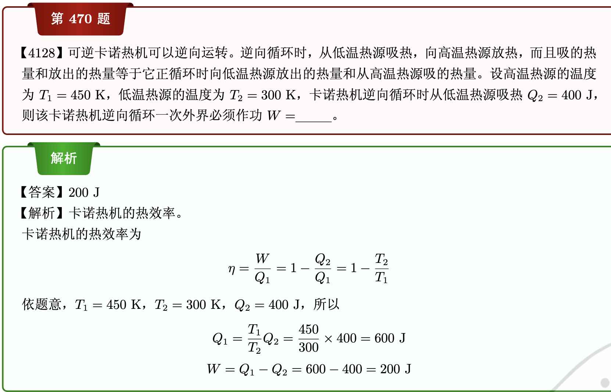

自我介绍
我是卡基米。 想放的链接卡基米的漫评
2025 年 10 月 24 日目前是
- 雪璇二次元文化社技术部部长
- 日语社二偶部部长
算法笔记读书笔记
这部分内容基于书籍（算法导论），为卡基米的一些见解和总结。
查缺补漏
宏定义
替换对应部分，进行编译与运行 末尾不加分号
条件运算符
(bool ? A : B) 如果bool为true, return A; bool为false, return B;
位运算符
a << x //a按照二进制每位左移x
a >> x //a按照二进制每位右移x
a ^ B //按位异或
a & b //按位与
a | b //按位或
~a //按位非
INF(无穷大)
const int INF = 0x3fffffff
const int INF = (1 << 30) - 1
scanf
本质为输入双引号内所有内容，按照格式符替换 数组不用& 因为数组虽然不是指针，但是会自动退化为第一个元素的地址 scanf会自动跳过空白符（除了%c）
printf
%% -> %
\\ -> \
实用输出格式
%md //右对齐输出 高位用空格补齐 超过m直接输出
%0md //用0来填充而不是空格
%.mf //取m位小数点（四舍六入五成双）
getchar putchar
ch = getchar() 会捕捉\n
putchar(ch) 输出单个字符
typrdef
typedef 一长串 名字
cmath
大部分cmath传入和传出的都是double
fabs (db) //绝对值
floor(db) //下取整
ceil (db) //上取整
pow (db,db) //幂函数
sqrt (db) //平方根
log (db) //其实是ln
sin (db) //sin
cos (db) //cos
tan (db) //tan
asin (db) //arcsin
acos (db) //arccos
atan (db) //arctan
round(db) //四舍五入
数组
函数内部变量开辟空间于系统栈 全局变量开辟空间来着静态存储区 1e6以上有爆栈风险
memset
memset(a, 0, sizeof(a))一般只赋值0和-1
gets
gets(str)被废了（C11）
fgets(str, sizeof(str), stdin)是替代品，但是会读取\n，所以要用str[strcspn(str, "\n")] = 0;去除
gets()可以吸收一个字符串，小心前面有\n,要用getchar()吸收一下
gets()以\n结束读取
puts()输出字符串后直接换行
字符数组的存放方式
gets scanf会自动在结尾加\0
printf puts会自动识别结尾的\0
所以储存的时候要预留一位
cstring
strlen(ch_arr) //返回长度（\0前字符数量）
strcmp(ch_arr1, ch_arr2) //按照字典序比大小，< 返回负数 > 返回正数 ==返回0
strcpy(ch_arr1, ch_arr2) //复制ch_arr2包含\0在内到ch_arr1
strcat(ch_arr1, ch_arr2) //拼接ch_arr2到ch_arr1后面
sscanf
sscanf(ch_arr, "%d", &num) 把ch_arr里面的数字当成数字输入到num里面
其它类型数据也可以同样处理
sprintf
sprintf(ch_arr, "%d, num) 把num写到ch_arr里面
其它类型数据也可以同样处理
数组作为函数参数
数组第一维不需要长度 数组第二维需要长度
指针是一个unsigned类型的整数
int *p = &num 这样给指针赋值。
指针解引用后的是对象本身
引用
相当于起别名，给指定对象一个其他的标识符，不是取地址
结构体
结构体不能定义自己，但是可以定义指向自己的指针 结构体的初始化，如果自己改了构造函数，就得初始化结构体变量 所以可以重载构造函数，享受福利
cin
cin.getline(ch_arr, length) \\读入一整行
getline(cin, string) \\读入一整行
eps
由于浮点数的精度误差，需要一个范围判断两数相等 经验表明1e-8差不多
const double eps = 1e-8;
#define Equ(a,b) (((fabs((a)-(b)))) < (eps)) //等于
#define More(a,b) (((a) - (b)) > ( eps)) //大于
#define Less(a,b) (((a) - (b)) < (-eps)) //小于
#define MoreEqu(a,b) (((a) - (b)) > (-eps)) //大等于
#define LessEqu(a,b) (((a) - (b)) < ( eps)) //小等于
圆周率
const double Pi = acos(-1.0);
浮点数有关
- 因为精度问题，0可能是一个负数，无法sqrt
- 因为编译环境问题可能会出现-0.00，可以将结果存为字符串与-0.00对比并加上eps修正
复杂度
OJ的运算能力为1e7~1e8 / s 空间复杂度指消耗最大的数据空间，一般够用，所以用空间换时间 编码复杂度指代码量
黑盒测试
通过scanf("%d", &n) != EOF 或者 gets(str) != NULL判断是否到达输入末尾
Chapter 1
算法初步
排序
选择排序
插入排序
sort
散列（hash）
bool数组存储每个数是否存在 int数组存储出现次数 通过数组下标查找
整数散列函数
把 key值 -> H(key) 常见散列函数 直接定址法 ： H(key) = key 线性变换法 ： H(key) = a * key + b 平方取中法 ： 取key平方中的一些数字 除留余数法 ： H(key) = key % mod
冲突
不同的key对应H(key)相同
线性排查法 H(key)+k
平方探查法 H(key)+k^2
拉链法 key值相同存到线性链表
也可以用map和unordered_map
字符串散列函数
二维整点映射 0 <= x,y <= range; h = x * range + y 字符串 A~Z 26进制 A~Z a~Z 52进制 A~Z a~z 0~9 62进制
递归
递归边界 递归式 全排列问题 n皇后问题 回溯法（提前检测是否满足，从而及时止损）
贪心
简单贪心
区间贪心
注意开闭区间 区间不相交问题
- 去除有子区间的区间，按照左端点排序，一旦出现一个不重合的改目前区间
区间选点问题
- 同上，
二分
需要严格递增序列
二分查找
- 不确定有无的寻找
int binary_search(int arr[], int n, int left, int right)
{
int mid = left + (right - left) / 2;
while (left <= right)
{
mid = left + (right - left) / 2;
if (arr[mid] == n)
{
return mid;
}
else if (arr[mid] > n)
{
right = mid -1;
}
else
{
left = mid + 1;
}
}
return -1;
}
- 寻找第一个大于等于的
int lowerbound(int A[], int x, int left, int right)
{
int mid;
while (left < right)
{
mid = left + (right - left) / 2;
if (A[mid] >= x)
{
right = mid;
}
else
{
left = mid + 1;
}
}
return left;
}
- 寻找第一个大于的
int upperbound(int A[], int x, int left, int right)
{
int mid;
while (left < right)
{
mid = left + (right - left) / 2;
if (A[mid] > x)
{
right = mid;
}
else
{
left = mid + 1;
}
}
return left;
}
二分夹逼
快速幂
typedef long long LL
LL binaryPow(LL a, LL b, LL m)
{
if (b == 0) return 1;
if (b % 2 == 1) return a * binaryPow(a, b -1, m) % m;
else
{
LL mu1 = binaryPow(a, b / 2, m)
{
return mu1 * mu1 % m;
}
}
}
迭代写法
typedef long long LL
LL binaryPow(LL a, LL b, LL m)
{
LL ans = 1;
while (b > 0)
{
if (b > 0)
{
if (b & 1)
{
ans = ans * a % m;
}
a = a * a % m;
b >>= 1;
}
}
return ans;
}
Two Pointer
单调递增的数组
寻找和为m的组合
while(i<j)
{
if (a[i] + a[j] == m)
{
i++;j++;
}
else if (a[i] + a[j] < m)
{
i++;
}
else j--;
}
2-路归并排序
const int maxn = 100;
void merge(int A[],int l1, int l2,int r1,int r2)
{
int i = l1 ,j = l2;
int tmp[maxn],index=0;
while (i <= r1 && j <= r2)
{
if (A[i] < A[j]){
tmp[index++] = A[i++];
}
else{
tmp[index++] = B[j++];
}
}
while (i <= r1) tmp[index++] = A[i++];
while (j <= r2) tmp[index++] = B[j++];
for (i = 0; i< index; i++)
{
A[l1+1] = tmp[i];
}
void mergeSort(int A[], int l, int r ){
if(l < r)
{
int mid = l + (r - l) / 2;
mergeSort(A, l, mid);
mergeSort(A, mid + 1, r);
merge(A, l, mid, mid+1, right);
}
}
}
非递归实现
void mergeSort(int A[])
{
for (int step = 2; step / 2 <= n; step*=2){
for(int i = 1; i <= n; i+= step )
{
int mid = i + step / 2 - 1;
if (mid + 1 <= n)
{
merge(A, i, mid, mid+1, min(i+step-1, n));
}
}
}
}
快速排序
- 把A[1]存起来tmp，left = 1， right = 末尾。
- A[right] => tmp,right--,如果A[right]<tmp;A[left] = A[right]
- A[left] <= tmp, left++,如果A[left]>tmp;A[right] = A[left]
- left == right A[left]=tmp;
int partition(int A[], int left, int right)
{
int temp = A[left];
while(left < right)
{
while(left < right && A[right] > tmep)
{
right--;
}
A[left] = A[right];
while(left < right && A[left] <= temp>) left++;
A[right] = A[left];
}
A[left] = temp;
return left;
}
void Quick(int A[], int left, int right)
{
if (left < right)
{
int pos = partition(A,left,right);
Quick(A, left, pos -1);
Quick(A, pos + 1, right);
}
}
随机快排
先生成一个范围内的随机数，将A[left] 与 A[随机数]交换，剩下一样。
其他高效思想
打表
寻找通项公式
随机选择算法
通过随机快速排序，每次随机选择一个数排序，并切割数组，直到随机到第K大的数字 存在O(n)的选择算法
数学入门
简单数学模拟
最大公约数 最小公倍数
欧几里得算法（辗转相除法）
gcd(a,b)=gcd(b, a%b);
b==0时return b;
最小公倍数 = a / gcd * b;
分数
用 struct 存 up分子 down分母 分子为0分母为1 分母为负上下取相反数 化简上下同除gcd 加减乘除进行模拟 分子分母最好用LL保存（乘法可能越界）
质数
埃氏筛
一个存储质数的数组
一个存储取值范围内每个数是不是质数的bool数组
从遍历取值范围，如果是质数，那么把所有范围内它的质数标记为合数
for(int j = i*i; j <= max; j+=i);
质因子分解
用struct factor存质因子和出现次数 开到10就够了，因为10个就超过int了 遍历之前的质数表（< sqrt(num)），不断用输入的数字除以，如果遍历完还不为0 说明还剩余一个本身目前的值
高精度
大数字可以开成struct 存贮数组和长度 加入构造函数进行初始化
高精度加法
高精度乘法
高精度减法
记得用大的减小的 记得去除前导0
while (c.len - 1 >= 1 && c.d[c.len-1] == 0)
{
c.len--;
}
高精度除法
从高位开始 每次carry 一个余数 carry *10 + a.d[i]; carry %= b; 记得去除前导0
扩展欧几里得算法
求ax + by = gcd(a,b)的解
int exGcd(int a, int b, int &x, int &y)
{
if (b == 0)
{
x= 1; y = 0;
return a;
}
int g = exGcd(b, a % b, x, y);
int temp = x;
x = y;
y = temp - a / b * y;
return g;
}
得到的x y 为特解 x = x + (b / gcd(a,b)) * 任意整数 y = y - (a / gcd(a,b)) * 任意整数
ax + by = c
如果c % gcd(a,b) == 0
特解x,y为 exgcd结果*(c/gcd(a,b))
x = x + (b / gcd(a,b)) * 任意整数
y = y - (a / gcd(a,b)) * 任意整数
同余式(ax-c)%m == 0
化为 ax + my = c 求解
同样如果(c % gcd(a,m) == 0)有解，且恰好有gcd(a,m)个mod m意义下不同的解；
特解x,y为 exgcd结果*(c/gcd(a,m))
x = x + (m / gcd(a,m)) * 任意整数
y = y - (a / gcd(a,m)) * 任意整数
逆元的求解与(b/a)%m的计算
逆元：(ab-1)%m == 0;a b互为逆元 (b / a )% m = (b * x) % m; a x互为逆元 通过求解(ax - 1)%m==0得到逆元x 如果 1%gcd(a,m)为0就有唯一解
费马小定理
如果m是素数，a为任意整数且a%m!=0,那么 所以逆元就是用快速幂很快就能得到答案
如果都失效怎么办
(b / a) % m = (b % (am)) / a;
组合数
求n！里面的质因子p数目
朴素思想遍历1~n 简化一 n!里面质因子数量 = 可以求0的数量（5的数量）
组合数的计算
- 朴素模拟21！直接爆
- 实际上C(m,n)=C(m,n-1)+C(m-1,n-1); 用数组存储结果
- 也可以牺牲范围用定义式的变形
LL C(LL n, LL m)
{
LL ans = 1;
for (LL i = 1;i <= m; i++)
{
ans = ans * (n - m + i) / i;
}
return 0;
}
组合数的计算%p
方法一 n-1e5 m-1e5
递推的每一步%p
方法二 n-1e6 m-1e6
对定义式进行计算 C(m,n) = n! / m! (n - m)! 计算每个阶乘的每个质因子的数量，用快速幂得到每个质因子次方%p的数量再%p
方法三 n-1e9 m-1e5 p-prime
对定义式的变形计算 m < p p为质数
int C(int n, int m, int p)
{
int ans = 1;
for (int i = 1; i <= m; i++)
{
ans = ans * (n - m + i) % p;
ans = ans * inserve(i,p) %p;
}
return ans;
}
m >= p p为素数 先统计分子分母里面p的数量 如果分子p比分母多，直接输出0 如果一样多，去除p的成分，再正常计算逆元
int C(int n, int m, int p){
int ans = 1; numP = 0;
for (int i = 1; i <=m; i++)
{
int tmp = n-m+i;
while(tmp %p==0)
{
numP++;
tmp/=p;
}
ans = ans * tmp % p;
tmp = i;
while(tmp % p == 0){
numP--;
tmp/=p;
}
ans =ans * inverse(tmp, p) % p;
}
if (numP > 0) return 0;
else return ans;
}
如果p不是质数呢 把p质因子分解，求出分子比分母多余的各个质因子，快速幂对这些多余质因子的乘积取余 另一边去除所有质因子后对属于部分逆元计算 也可以把分子分母全质因子分解，得到多余的质因子，进行运算取模。
方法四 n-1e18 m-1e18 p-prime-1e5
int Lucas(int n, int m){
if (m == 0) return 1;
return C(n%p,m%p) * Lucas(n/p,m/p) % p;
}
学习CSAPP
这一部分的内容大概是卡基米学习CSAPP（深入了解计算机 目的在于
- 深化记忆
- 便于复习
- 记录一些自己产生的理解
第1章 计算机系统漫游
在我看来，第一部分的内容就是带我们过了一遍计算机系统的整体架构。 它用20多面传达了一个思想————你懂了1%，就懂了99%。 我们要学会构建一个黑盒子（抽象），对于里面的组成，我们不去了解，而是当成一个实现了某种功能的整体去使用它，只有在真正需要知道原理不可的时候，再去深入研究。 （就像你学走路的时候不用了解身体是怎么构造的，知其然不知其所以然有时候可以有效降低学习成本，简易理解） 闲话少说，围绕大部分人写的第一个c语言程序，让我们开始计算机系统漫游。
#include <stdio.h>
int main() {
printf("Hello, world!\n");
return 0;
}
1.1信息就是位+上下文
从ASCLL标准开始，这里引出了重要概念，系统中所有的信息—包括磁盘文件、内存中的程序、内存中存放的用户数据以及网络上传送的数据，都是由一串比特表示的。 简而言之，8个位（0/1）搭包成一个字节，字节组成文件，由ASCLL组成的叫文本文件，c语言源文件就是一个文本文件。剩下的都叫二进制文件。 我们不禁发出疑问，都是一堆1和0，计算机怎么知道它们是什么呢？ 这就是上下文的作用，上下文解释了这些字节是什么。
1.2程序被其他程序翻译成不同的格式
众所周知，我们的c语言是高级语言，计算机看不懂。 我们的helloworld程序要运行，需要以下步骤
- 预处理器阶段：预处理器把我们的
#include<stdio.h>替换成预制好的代码（stdio.h） - 编译阶段：编译器把预处理后的代码翻译成汇编语言
- 汇编阶段：汇编器把汇编语言翻译成机器语言，现在电脑看得懂了
- 链接阶段：链接器把多个目标文件（.o文件）和库文件（.a文件）链接成一个可执行文件（比如我们的helloworld用到了printf函数，需要把printf.o链接进来）
这么折腾完之后，我们就得到了可执行文件，可以运行在计算机上。
1.3了解编译系统如何工作是大有益处的
跳过，因为这里再讲接下来哪几章会提到编译器的什么内容，看不懂说是
1.4处理器读并解释储存在内存中的指令
现在我们要运行helloworld程序，表面上，我们看见黑框里面出现了"hello, world!"，实际上，内部又发生了什么呢？
硬件组成
- 总线：贯穿整个系统的一组电子管道，它携带信息字节并负责在各个部件间传递。总之电线说是（x）
- I/O设备：输入/输出设备，比如键盘、显示器、鼠标、磁盘、网络接口等。输入输出设备和总线依靠适配器/控制器连接。
- 主存：在处理器执行程序时，用来存放程序和程序处理的数据。俗称内存（x
- CPU：解释(或执行）存储在主存中指令的引擎。
- PC：程序计数器，记录下一条要执行的指令的地址。
- 寄存器：CPU内部的小容量存储器，用来暂存指令或数据。
- ALU：算术逻辑单元，用来执行算术和逻辑运算。 总之，这么一堆精密复杂的东西构成了CPU，通过把数据在主存，ALU，寄存器之前移动或操作，完成了各种机器代码指令。 实际上没有这么简单，剩下的以后细说说是。
运行hello程序
接下来大体讲一下具体运行
- shell程序把命令送到寄存器，再存到内存
- 回车完成命令输入，shell把hello的代码和数据从磁盘复制到内存
- 数据通过DMA（直接存储器存取）从磁盘复制到主存（可以不经过CPU）
- CPU从内存中取出指令并执行
- 指令最终达成把"hello,world\n"从主存移动到寄存器文件，再复制到显示器。
1.5高速缓存至关重要
我们可以发现，有很多时间浪费在了信息的挪动上，显然，如果能加速信息复制的时间开销，程序就能运行得更快。 众所周知，空间越大，访问时间越慢，于是CPU引入了cache（高速缓存）来解决这个问题。在高速缓存里面加入经常访问的数据，从而达到了加速的作用。
1.6存储设备形成层次结构
为了兼得大空间和低访问时间，CPU引入了存储设备的层次结构。
- L0：寄存器
- L1：L1高速缓存
- L2：L2高速缓存
- L3：L3高速缓存
- L4：主存
- L5：磁盘
- L6：网络
越上层，空间越小，访问时间越快；。借用层次结构，我们提高了程序性能。
1.7操作系统管理硬件
先思考一个问题，为什么进行编程的时候我们不用考虑底层硬件的细节，也不用考虑其他程序的干扰？ 实际上是操作系统通过抽象，实现了
- （1）防止硬件被失控的应用程序滥用
- （2）向应用程序 提供简单一致的机制来控制复杂而又通常大不相同的低级硬件设备。
进程
在程序运行的时候（比如我们的helloworld），操作系统创造了系统只有它在运行的假象，称为进程。 进程是操作系统对一个正在运行的程序的一种抽象。操作系统可以通过保存进程的上下文，实现了CPU的并发执行（反复横跳，就是说看起来一个CPU在运行多个进程，实际上只是快速切换而已）。 比如A进程先跑了一段时间，B进程来了，A的上下文被存起来，B进程开始运行，B运行完了，再通过A被存储的上下文继续A。 这个转化的由操作系统内核（kernel）管理，它实际上是操作系统代码常驻主存的部分，是系统管理全部进程所用代码和数据结构的集合。
线程
看不懂说是
虚拟内存
还有个有意思的问题，为什么我们设计程序的时候不用管乱七八糟的字节存在哪里？ 实际上，操作系统通过虚拟内存，实现了进程独占主存的假象。并且虚拟地址空间被明确分成了具有准确定义的区，包括
- 程序代码和数据
- 堆
- 共享库
- 栈
- 内核虚拟内存
文件
文件其实就是字节序列。但是超出想象的是，各种设备（比如鼠标键盘屏幕）都被看成文件。 通过这种抽象，我们可以通过统一的方法去用不同的设备，也可以让同一个程序在不同的环境下运行。
1.8系统之间利用网络通信
从现在开始，我们即将脱离单机模式，进入Internet。 还是helloworld，我们可以通过新的方式运行
- 在键盘输入hello
- 客户端像服务器发送hello请求
- 服务器运行hello程序，产生"hello,world\n"
- 服务器把结果发送给客户端
- 客户端把结果显示在屏幕上。
1.9重要主题
这一块讲了一堆散装概念
Amdahl定律
假如我们把程序中a比例的时间缩短到1/k，那么总体的时间会变成 那么整体加速比就为
并发和并行
并发就是一个有多个活动的系统，并行就是用并发让程序运行得更快。
- 线程级并发：多个线程快速切换
- 指令级并行：多个指令同时执行
- 单指令多数据并行：一条指令处理多个数据
抽象的重要性
现在我们可以看出，计算机系统一直在做抽象这件事来建立可以直接使用的简单有序的模型，从而降低各方面的开销以及提高性能。
1.10小结
你在看的已经是小结了，何必再看一个小结（笑）。
写于2025年1月8日21:21:47
第二章 信息的表示和处理
你知道的，前面还是些小菜，现在卡基米确实看得有些糊涂了。 这一章的主要内容在我看来，是打破传统数字的概念，理解计算机上面的数字，建立新的“直觉”，正是因为计算机里面的数字和自然状态的数字不一样，会在程序中产生不一样的行为，了解这些细节对于一口气写出正常的程序非常重要（或者及时补救说是） 闲话少说，直接开始折磨
2.1 信息存储
2.1.1 十六进制表示法
由于计算机一个字节8个位，直接写一串01有一点神秘，所以我们可以用十六进制把4个位压成一个数字，这样一共有16个数字，0-9，A-F，用A-F表示10-15。用0x来说明这是个十六进制数。 比如二进制数11110000可以被压缩成0xF0 只需要
- 2->16：划分为4个4个一组，开头不足的补0，进行转换
- 16->2：一变四（可以记住对应十进制数，然后化成对应4个二进制数）
2.1.3 字数据大小
不知道安装应用有没有看到x86，x64之类的字母，这些都是什么意思呢？
实际上，这里说的是计算机的字长，它决定了虚拟地址空间的最大大小，现在我们一般用的64位的设备。总之可以看成你设备的内存可以用多长的地址来表示。
那么我们不禁发问了，设备的字长不一样，我们的程序怎么保证同一变量在不同设备都正常存储呢？
答案是，我们需要做到可移植性，比如c语言里就有int32_t之类指定它的数据大小。
2.1.3 寻址和字节顺序
由于一个对象可能要用好几个字节，我们通常把它存储为连续的字节序列，用第一个地址表示它的地址，但是只能放这一长串就有两种
- 大端法：最高有效位在前面，比如0x12345678，从低到高会存12 34 56 78
- 小端法：最低有效位在前面，比如0x12345678，从低到高会存78 56 34 12
两种方法没什么区别，纯粹大家习惯不同，结果都不想改，最后导致不同设备读取对方的数据发生了问题（因为顺序不同，结果拿到了反序的数据）
2.1.4 表示字符串
相反，如果是一堆char，因为它就用一字节，而且都用ASCLL码表示，所以跨平台更不容易出问题。
2.1.5 表示代码
这里告诉我们二进制代码在不同操作系统上面是不兼容的
2.1.6 布尔代数简介
这里终于到了我们神神秘秘的布尔代数了，下面是四个常用的布尔运算，对接下来的位级运算很有用
- 与A是1，B是1，则A&B=1
- 或A是1或者B是1，则A|B=1
- 非A是1，则~A=0，A是0，则~A=1
- 异或A和B都是1或者0，则A^B=0，A和B不同，则A^B=1
现在你已经会了运算方法了，我们就可以对位向量（一堆1和0的序列）进行运算了。 比如
- 1010&1111=1010
- 1000|0101=1101
- 1010^1100=0110
- ~1010=0101
位向量可以解决很多问题，比如把集合{0，1，3}表示为1101，{1，2}表示为0110，那么1101&0110=0100，说明两个集合有2这个共同元素。
2.1.7 C语言中的位级运算
这里主要说明上面的这些计算方法刚好C语言都能用，通过熟练掌握这些东西，我们可以实现一些行为，比如掩码计算（以后再说）
2.1.8 C语言中的逻辑运算
C语言中有以下3种逻辑运算符
- &&（与）
- ||（或）
- ！（非）
它们不对参数进行按位计算一大串01，而是把参数当成0和1，只要不是0，剩下的1234，1.0，都当成TRUE，0，NULL，空字符串，都当成FALSE。
2.1.9 C语言中的移位运算
<<（左移）>>（右移）
左移很简单，就是把每个位向高移动对应位数，超出最高位的丢弃，在低位补0。比如（0101）<<1 = 1010，（1010）<<2 = 1000 右移就有两种可能了，出于后面会说的特殊需求有算术右移和逻辑右移两种。 两种右移都是向地位移动指定位数，超过最低位的丢弃。 但是算术右移会按照开始时是1就在高位补1，如果是0就和逻辑右移一样在高位补0。
有一个有趣的点是，如果你把一个32位的东西移动了36位，C程序可能只会移动4位，因为它对移动的位数进行了取模。（不过说不准）
2.2 整数表示
接下来大的要来了
2.2.1整型数据类型
只需要知道
- 不同变量字节数不同，所以取值范围不同
- 整型分为有符号和无符号
- 有符号由于表示方式，负数的取值范围比正数大一
2.2.2 无符号数的编码
按照从最低位是2的0次方，从低到高不断递增1，实现把一个无符号的数变成一条位向量比如15等于2的3次方加2次方加2的1次方加2的零次方，所以15的位向量就是1111。
2.2.3 补码编码
这里特别的地方就是把最高有效位的权重改成-2^{最高位的位数-1}，现在就可以用同样的一串位向量表示负数了，实现了有符号。
举例说明：
- 0101：
2^2+2^0=4+1=5 - 1010:
-2^3+2^1=-8+2=-6
通过这种刚开始看可能有点怪的编码方法，我们实现了有符号数的表示。 现在可以解答为什么有符号的数负的取值范围比正数大一。 因为1开头表达-8到-1,0开头却表达0-7，被0占用了1个取值范围说是。
如果上过我们24的程序设计课，我们还知道有其他的表达方式
- 原码 第一位表示正负号，剩下的位表示数值，比如0001表示1，1001表示-1（可能这种方式更好理解）
- 反码 正数的反码就是它原码本身，负数的反码是它的符号位除外，其余位取反，比如1010=1101。这种方式，我们可以得到第一位表示
-(2^{最高位的位数-1}-1)剩下表示2^{对应位数-1},比如1010 = -(2^3-1)+2^1=-7+2=-5(注意力够好的小伙伴可以发现，把1010加1就是1011，而这刚好是-5的补码编码)
2.2.4 有符号数和无符号数之间的转换
有人说，C语言有强制类型转换和指针，这是最好的特性，也是最坏的特性,总之，学了这里，你不至于在无符号和有符号强转的时候出错
简而言之，底层的逻辑其实是变成位向量，然后换对方的编码方式，比如对于字长4位的机器，无符号的9转成1001,再按照补码编码变成-7，就是这个逻辑。
而为了快速计算，我们可以这么想，无符号变有符号，第一位从+2的(最高位-1)次方变成-2的(最高位-1)次方了，那我们就可以-2个2的(最高位-1)次方。（9 - 2*(2^(4-1))= -7
同理，有符号变成无符号就是把第一个位从-2的(最高位-1)次方变成2的(最高位-1)次方，，我们可以直接加两个2的(最高位-1)次方。
总结就是第一次抵消原本编码方式的影响，第二次采用新的表达方式。
2.2.5 C语言中的有符号数和无符号数
这里我们需要知道的只有C语言表达式的变量只要有一个无符号的，就会把所有有符号数变成无符号的，然后进行运算，需要小心神秘的行为比如 -1被认为大于0（无符号）
2.2.6 扩展一个数字的位表示
你看，现在我们知道为什么右移有两种方式了，算术右移和逻辑右移。 无符号数只要不断创建新的最高位再用0填充 有符号数就看第一个是什么，1就不断补1，0就不断补0。
举例说明：补码编码1001加上新的最高位1后原本第四位的1从-8变成了8，而新加的1变成了-16，两个抵消一下相当于-8，数的值就可以不变，而拓展位表示。
2.2.7 截断数字
截断也很简单，底层就是直接丢掉对应的高位 而表面上的数，无符号可以简单的取（最高位的2次方）的模 有符号没有简单的办法，只能先变成无符号，取模完变回有符号。
2.2.8 关于有符号数与无符号数的建议
建议你多练说是（x
2.3 整数运算
2.3.1 无符号加法
底层就是直接进行按位加，然后溢出就截断。 表面上看变成了一个滚轮，到了能表达的最大值，比如15，再加1就变成0了 要检测也很简单，只要看加法结果是不是反而比原来小就行
2.3.2 补码加法
老规矩，底层就是变成位级表示，然后按位加，多了截断
表面上看就是一个滚轮，但是到了最大值，再加1就变成最小值了
怎么算呢，如果小于最小值，就加一个2的字节数次方，大于最大值，就减一个2的字节数次方。
要检测有没有爆，看正正相加有没有变成负，负负相加有没有变成正
2.3.3 补码的非
在2.3.1中，提到了阿贝尔群，意思是模数加法形成了阿贝尔群，它具有可交换和可结合性，就是说虽然行为怪怪的，但是有符号和无符号数的运算是符合交换律和结合率的。 这里我们就定义补码的非就是和自身相加等于0的数。 为了实现它，其实就是想办法让按位加溢出。截断后剩下一条0. 这里底层反而比表面难，表面只要对不是最小值的取负数，对于最小值取本身就行。 底层可以按位非然后+1，或者找到最低位的1把左边全部按位非
2.3.4 无符号乘法
进行一个x*y然后取模，和加法一样，这里没讲怎么直接实现按位乘法，有点好奇。
2.3.5 补码乘法
位级等价性不是很懂，按照我的理解，就是换成无符号数进行乘法，再把结果换回有符号数没有影响。 因为本质上都是变成按位乘法，然后再得到一样的位向量（截断后），只是按照不懂编码方式变回十进制数说是。
2.3.6 乘以常数
你知道的，乘法一看就比加法耗时间，我们能不能把乘法变成比较快的操作呢？
众所周知，一个常数可以变成二进制，这说明它可以拆成一堆2的不同次幂的和。而对于一个数，乘以2的幂，不就是把它左移吗（
所以我们可以进行如下的操作
比如x * 7 = x << 2 + x << 1 + x
当然我们还可以贪
x * 7 = x << 3 - x
具体怎么贪看哪个方法耗时短，设备会替你考虑的
2.3.7 除以2的幂
为了实现向0的方向取整，（-1.1->-1, 1.1->1）这里有符号的会比较复杂。 无符号和有符号的正值只需要大胆的右移。因为移位的行为舍去了多余的低位，相当于向下取整。 而有符号的负值就麻烦了，因为右移是向下取整，但我们需要向上取整，怎么办呢？ 我们可以用偏置技术，按照位移的位数，给负数加上（2的位移位数次方-1），再进行右移。 为什么，这样可以对于被截断的位数进行一个隐形的判断，但凡被截断的地方有一点值，就会向刚好没被截断的最低位+1，这样就会向上取整，而如果刚好被整除，也不会产生干扰，因为这个偏量刚好被截断了
2.3.8 关于整数运算最后的思考
总之，要记住关键就是变成二进制，完成位级运算，再编码回所需形式
2.4 浮点数
一直在说我们的整型，那我们的浮点数肯定要发言了。 当然，还是从简单的开始
2.4.1 二进制小数
如果小数点左边是2的n次方，那小数点右边也不能搞特殊，所以，小数点右边就是负次方说是，第一个二分之一，第二个四分之一以此类推。 我们可以发现这样没办法精确表示一些小数，实际上本来就是这样，小数就是只能在计算机里面无限接近，近似表达的（10进制不也有无限不循环小数吗，也是只能近似表达）
2.4.2 IEEE浮点表示
可以发现，如果浮点还是和整型换汤不换药，不是很理想 于是我们有了IEEE754标准 它把浮点数分成三部分：符号位、阶码字段、尾数字段
- 符号位：最前，0表示正数，1表示负数
- 阶码字段：中间，阶码（对尾数表示的小数乘以2的几次方），这不就是在说小数点位置应该在哪里吗，实际上就是这样，所以用了生动形象的比喻，浮点
- 尾数字段：最后，表示小数部分，表示在按照指数字段表示的数移位之前的基数
所以浮点数就是浮点数 = (-1)^{符号位} *尾数*2^{阶码}
单精度浮点阶码字段8位，尾数字段23位
双精度浮点阶码字段11位，尾数字段52位
虽然看起来已经结束了，但是根据字段内容的不同，解读被编码的值的规则是不一样的
分三种情况：
- 规格化的
- 表现：阶码字段既不全为0也不全为1
- 阶码字段 = 阶码字段直接转10进制 - 2的（阶码字段长度 -1）次方 + 1 这么做是为了实现负次方的幂
- 尾数字段 = 尾数字段直接转10进制 + 1 这么做是为了实现省略小数点前面的0，因为反正这种情况下都是一，不如贪一位，让尾数更精确
- 非规格化的
- 表现：阶码字段全为0
- 阶码字段 = - 2的（阶码字段长度 -1）次方 + 1 这么做是为了实现和规格化平滑切换
- 尾数字段 = 尾数字段直接转10进制 因为这时候表达的数非常接近0或者就是0，搞不到1说是
- 无穷大或者NaN
- 表现：阶码字段全为1
- 尾数字段不全为0 NaN（Not a Number）
- 尾数字段全为0 Inf（无穷大）
2.4.3 数字实例
这里假定一个8位浮点，有4个阶码位和3个尾数位 0 0000 001
- 首先看到它是非规格化的，经过计算公式，我们知道它的阶码为
1-2^{4-1}=-6尾数为0.001（二进制） - 经过向左移动小数点6位，得到0.000 000 001（二进制）
- 所以这个数是1/512 0 0111 110
- 首先看到它是规格化的，经过计算公式，我们知道它的阶码为
14 - 2^{4-1}+1 =7尾数为1.110（二进制） - 经过向左、右移动小数点7位，得到1110 0000.0（二进制）
- 所以这个数是 224.0
2.4.4 舍入
通常我们有四种舍入方式
- 向零舍入
- 向上舍入
- 向下舍入
- 以及全新的向偶数舍入
我们肯定是讨论新鲜的东西，什么是向偶数舍入呢？ 对于一长串的二进制，舍入到指定位数，我们看它偏向向上舍入还是舍下舍入，如果发现两种方法都一样就选能让最低有效位是0的那个 这样有什么好处呢，其实就是说，一直四舍五入数据偏大，一直五舍六入数据偏小，如果选择在五的时候向偶数方向舍入，就也可以总体上50%概率五舍，50%五入
2.4.5 浮点运算
这里没有讲底层的实现，只要知道由于舍入的性质，浮点运算可以交换，但不能结合
2.4.6 C语言中的浮点数
这里需要明确
- int -> float 数字不会溢出，但可能会被舍入
- double -> float 数字可能会溢出,也可能会被舍入
- int/float -> double 数字不会溢出，也不会被舍入
- float/double -> int 数字会被向0舍入,接着可能发生溢出
2.5 小结
不想说话了，这章内容确实一大堆，我已经尽可能去提供一些自己的理解方式了
学习自顶向下
你知道的，每天用我们的互联网，却不知道我们的互联网到底是什么原理 我们总得进行一些了解对吧，所以寒假又开始推另外一本大黑书 Ok，总之这个也是读书笔记之类的东西，记录一下自己的学习过程，希望能对你有所帮助
计算机网络和因特网
相对于 CSAPP，这本书的开头就让我感受到压力倍增，它在 30 面的篇幅里面抛出了更多对我来说全新的专业名词，并且对其的解释经常发生耦合和互相解释的情况。
不过正如这本书说的,“如果你想在家庭聚会上一鸣惊人，看完第一章就应当由足够的知识来给家人和朋友留下一些深刻印象了”
总之，这些知识只是纯粹给你留下一些初步的印象，前面的区域以后再来探索吧
1.1 什么是因特网
1.1.1 具体构成描述
因特网就是一个连接了全世界数十亿计算设备的网络。
这些计算设备有传统的电脑，也有手机之类的移动设备，还有家用电器之类的非传统设备。
这些各种各样的计算设备被统称为主机或端系统，它们之间通过通信链路和分组交换机相互连接。
对于链路，它肯定是有传输速率的，以 bps（比特每秒）度量。而在端系统发送数据时，通常会将数据分段
，再加上首部字节（一些类似于上下文的标记），形成的数据包就叫做分组。
而分组交换机就是接受通信链路传来的分组再把它通过另外一条通信链路发出去的设备，比如路由器和链路层交换机
就像从一个工厂到另外一个工厂（端系统），中间货物（数据）被分装到不同的卡车（分组），经过高速公路（通信链路）和交叉口（分组交换机），最终到达目的地一样，分组通过的通信链路和分组交换机被叫做路径。
端系统通过因特网服务提供商（ISP）接入互联网，简单来说就是移动联通电信这些的运营商，你得向他们交钱来拿到互联网服务。
然后呢，我们知道，数据的传输需要一些通用的规矩，这些规矩被叫做协议，比如我们的 TCP/IP 协议，就是协议。
因为协议必须像一些共识一样才能发挥互联的作用（就像两个人必须有共通的语言才能交流一样），因特网标准产生了，一个叫 IETF 的组织研发了它，它们给出了一堆叫请求评论的官方文档，里面定义了各种协议。
1.1.2 服务描述
讲了这么多，似乎和我们的日常生活没有什么强而有力的关联，那么我们从分布式应用的角度来讲（就是我们平时电脑手机里面的各种联网 app，它们一般涉及了各个端系统之间的交互）。
为了实现分布式应用的各种联网功能，端系统提供了套接字接口，规定了不同端系统的程序之间交接数据的方式。借用书里的类比，你像别人写信，但不能只写信，你害得写一些信要给谁，送到哪里，邮政编码之类的信息，才能让信送到。同理，数据也是一样的。
1.1.3 什么是协议
你知道的的，详细的语言描述有时候不如来点比喻，用人类的比喻来说，很多人在找别人说事情前喜欢先发一句“在吗？”，再通过对面的反应来继续下文，要是对面没回或者发动了自动回复，那肯定就不能说事情了
这种对于接受和回答的报文的采取的约定俗成的行为模式，就是协议。
网络协议就像是人类的协议一样，不同的设备按照协议的规矩进行交流进行互联网上的通信。
专业来说，协议定义了在两个或多个通信实体之间交换的报文的格式和顺序，以及报文的发送或接受以及其他事件所采取的操作。
1.2 网络边缘
接下来，我们将从外到内粗略地遍历因特网这张巨大的网，在互联网边缘的肯定是我们的端系统了，我们通常听到的客户端和服务器，就是端系统的两种角色。
客户端就是我们常用的电脑手机之类的，各种应用程序运行在上面，而服务器通常是一些更加强大的设备，里面存储了许多的信息，并承担了这些信息发布的工作，这些信息包括我们联网得到的视频，图片，文章之类的。
1.2.1 接入网
家庭接入
从边缘向内，接入网就是将端系统物理连接到边缘路由器（就是端系统到另一个端系统路径上的第一台路由器）的网络。
现在最流行的接入网有两种，数字用户线（DSL）和电缆
以下内容开始包含不负责任的大胆猜想和各种不知名网页内容
简单来说就是给传统的有线座机的电话线加上了联网的功能，我们在家里加上DSL 调制解调器，把数字信号变成高频音，发送到电话公司的数字用户线接入复用器（DSLAM），变回数字形式。这种额外功能是通过将电话信号分成 3 种频段
- 高速下行信道 （50kHZ~1MHz）
- 中速上行信道 （4kHz~50kHz）
- 普通的双向电话信道（0~4kHz）
这种把分割不同频率的信号并变成不同信息的操作让一条电话线兼具了电话和联网的功能，于是家里就连上网了。这种操作只能说省钱又省事。
电缆因特网接入则是利用了有线电视基础设施的电缆，那么进行类比，它的电缆调制解调器就相当于 DSL 调制解调器，**电缆调制解调器端接系统（CMTS）**就相当于 DSLAM
当然，还有一些其他宽带接入技术，比如 - 光纤到户（FTTH） 从本地中心局（类似于 CMTS 和 DSLAM 放在的地方）连一条光纤到一个地区，然后通过光纤分配器把一条光纤变成多条，分配给多个家庭。同样也有一个类似调制解调器的东西即光纤线路端接器把光信号和电信号进行转换
- 5G 固定式无线采用无线方式从供应商的基站发送数据，通过家里的调制解调器接收，再连到 WiFi 无限路由器上。
企业（和家庭）接入
而在学校和家庭环境里，局域网（LAN）明显更加常见，最常见的（感觉是写书时最常见的）是以太网。就是我们学校机房里面那种有线的连接，把设备统一链接到以太网交换机，然后再接到路由器。
而基于 IEEE802.11 技术的无线 LAN 接入，说人话就是WiFi，才是真正无所不在。
现在毫无疑问，WiFi 已经走入家家户户了，现在的家庭网络通常由
- 无线接入点（与无线设备通信的基站）
- 无线路由器（无线接入点和其他无线设备与因特网相连的设备）
- 无线设备（手机，电脑，路由器，打印机等）
- 有线 PC（就是那种接网线的台式机）
广域无线接入
简单理解就是俗称的移动数据（流量）东西，通过和蜂窝移动电话一样的基础设施，实现了随时随地联网的能力，现在我们已经有 3G、4G、5G 无线技术了。
1.2.2 物理媒介
我们的数据在穿来穿去的过程中肯定需要一些媒介对吧，毕竟我们的电磁波或者光脉冲或者什么东西不能凭空传送对吧。
它们跨越的物理媒介被分为
- 导引型媒介 （固体媒介，比如双绞铜线，光缆等）
- 非导引型媒介（空气或外层空间）
书里主要介绍了五种
- 双绞铜线 最便宜，最常见，最古老，电话线基本是双绞铜线
- 同轴电缆 电视系统中最常见
- 光纤 又快又稳定，被认为是因特网的主干，就是太贵了
- 陆地无线电信道 不需要物理线路，可以穿墙，移动连接，
- 卫星无线电信道 还在开发说是
1.3 网络核心
你以为之前的已经够干了，实则后面还有更干的
我们继续深入计算机网络，现在我们的信息已经进入第一个路由器，我们来到更多分组交换机和通信链路组成的网络核心，一个网状网络。
1.3.1 分组交换
在网络应用中，端系统彼此交换报文，它可以是控制用，也可以是数据，我们的分组就是被切块的报文。此事在上文已有记载
存储转发传输
简单来说对于一个分组的传输，我们要先在路由器里面拿到它的所有比特（存储），再向下一条通信链路发送（转发）。
比如给目的地发一个分组，中间经过两条通信链路和一个路由器，假设我们忽略传播时延（在通信链路上传播的时间），只考虑传输时延（路由器发货信息需要的时间）并设置为 t，那么我们需要等 2t 时间而不是 t 时间，因为中间的路由器要求等到 t 秒时分组完全到达时再进行转发，接下来还要 t 时间发货，所以总共 2t 时间。
排队时延和分组丢失
基于这种存储转发传输，我们可以注意到，分组交换机一定有一个输出缓存（输出队列），因为传输时延的存在，其他的分组肯定要在输出缓存里面排队，等着被转发。这个等待的时延被叫做排队时延。
由于输出缓存肯定是有上限，那么溢出的分组很明显会分组丢失（丢包）
转发表和路由选择协议
有没有想过，这么多分组，分组交换机怎么知道该把它们送到哪里呢?
在因特网中，每个端系统拥有一个 IP 地址，而每个路由器有个转发表，里面记录了不同的目的地址要转发到哪条通信链路并到达哪个下一个路由器。
参考没有导航时期的问路，你在路上拉一个人，问某个人的家怎么去，路人可能先告诉你走哪条路到对应的大街，然后到那个街上再问，得到走哪个小巷，到小巷里再问，得到在哪个房间。就是这样的过程
1.3.2 电路交换
上面说完分组交换了，现在来讲电路交换
电路交换里面，端系统之间的资源是预留的，比如传统的电话网络，两台设备之间是真的有一条电路的，也就是说网络链路上面已经预留好了带宽，可以以恒定速率传送数据。
那么回到电路交换网络，在不同的端系统间，网络会创建端到端连接，提前给了一条恒定速率的带宽，而不是像分组交换那样，需要在传输时延的存在下，让分组排队等待。
等量交换网络的复用
电路交换网络肯定不是一条线就只能两条主机对吧，太低效了，我们有两种策略
- 频分复用（FDM） 为每个连接指定一个频段，就像电台的不同频段可以有不同的节目一样
- 时分复用（TDM） 每个连接指定一个时隙，在时隙里面传输指定的数据，比如每秒的 1/4 秒发不同端系统之间的信息这种
分组交换和电路交换的比较
- 分组交换不适合实时服务，因为它可能因为排队时延产生我们常说的时延，而电路交换没有这种缺点
- 而电路交换浪费了资源，因为它需要预留资源，在空闲时期，这些资源不能用于其他的连接 ，而分组交换可以调动所有的带宽去进行连接
总体来看，分组交换占据上风
- 假设用户活跃的概率是随机的，无论怎么样电路交换都只能提供为一定数量的端系统提供一定数量连接，而分组交换可以给更多端系统通过连接 （假设电路交换系统和分组交换系统都只能同时提供 10 个连接，假设特定用户活跃的概率是 10%，对于 35 个用户，同时有 11 个及以上用户进行连接的概率也只是 0.0004 左右，大部分情况下不会卡顿，而电路交换系统依旧只能 10 个用户）
- 假设有一个用户突然产生了大量分组，而其他用户不活跃，分组连接可以调用所有带宽，而电路交换系统只能提供预留的带宽，这就造成了资源的浪费
1.3.3 网络的网络
我们前面看到端系统通过接入 ISP 和因特网连接，但是毫无疑问，我们通常知道的移动，电信，联通，以及外国的 ISP 之间肯定存在连接，不然因特网的用户怎么在不同 ISP 提供服务的端系统之间互联呢？
按照发展进程我们逐渐完善现在的因特网网络结构
- 单一的全球传输 ISP 连接所有小的 ISP，并且也把它们当成客户，收费来提供网络服务
- 既然有利可图，那么全球的 ISP 肯定也不止有一个了，所以我们有了好几个伪全球 ISP，它们在最高层相互连接，形成一个全球 ISP
- 既然向上已经满了，我们也可以在全球 ISP 和小的 ISP 之间插手，建立区域 ISP，给全球 ISP 钱，同时向下级的 ISP 提供收费服务
- 在这样的多级节后上，我们再加入
- 存在点（PoP） 提供客户 ISP 和提供商 ISP 的连接
- 多宿 一个 ISP 上面可以有几个提供商 ISP
- 对等 同级别的 ISP 之间进行免费的连接，保证了互联网的互联
- 因特网交换点（IXP） 对等实现的地方
- 当然也有像谷歌这样的大手子，作为内容提供商网络，一方面尽可能和底层的 ISP 对等，绕过高层 ISP，另一方面也在必要情况下遵守全球 ISP 的管制，向它们交钱，获得网络服务
1.4 分组交换网的时延、丢包和吞吐量
1.4.1 分组交换网中的时延
前面描述过一个分组从一个主机出发，经过路由器到另外一台主机的过程，那么在一个分组经历这个过程的途中，究竟遇到了哪些时延呢？
- 处理时延 检查分组首部和决定该分组去哪里想要的时间是处理时延的一部分，还有其他像检查比特级别差错之类的时间也包括在内
- 排队时延 分组在路由器的输出缓存里面等待画的时间
- 传输时延 路由器对一个分组进行传输消耗的时间（或者说发射）
- 传播时延 分组被传输后到下一个路由器的时间（运货的时间）
整体来看这四个时延加起来，就是我们的节点时延，表示了一个分组从进入一个路由器到到达下一个路由器的总时长
1.4.2 排队时延和丢包
对于排队时延，这里主要讲了一种衡量排队时延的统计量->流量强度
假设分组到达队列的平均速率是 a 个分组每秒，传输速率是 R 比特每秒，分组平均大小是 L 比特，那么我们的流量强度就是 La/R
我们可以注意到，当流量强度大于 1 时，排队的队伍会越来越长，直到无穷大，所以对于设计系统时流量强度不能大于 1
而实际上，假设有一个设计不那么好的系统，及时它的排队队伍有时候会一直变长，也不会趋于无穷大，这是因为输出缓存的大小是有限的，没有地方储存的分组会被路由器丢弃，这时就发生了分组丢包
1.4.3 端到端时延
现在我们知道了节点时延，也就是单台路由器的时延了，那么对于一个端到端时延，它就是把所有的节点时延叠加起来
为了理解端到端时延，我们有了 traceroute 程序，它可以抓取经过每个路由器的时延并且返回对应的信息，虽然我并没有进行一个尝试
并且这一节还指出在后面的章节还有一些其他的时延说是
1.4.4 计算机网络的吞吐量
除了时延和丢包之外，衡量计算机网络的另外一个参数就是吞吐量
实际上，这个吞吐量就是两个端系统间传输文件的速率
这里我们主要讨论吞吐量的重要影响因素————瓶颈链路，简单来说就是（短板效应），吞吐量取决于所有通信链路里面最速率最小的一条。
另外一方面，如果，链路被多个端到端连接使用，情况还需要重新讨论
1.5 协议层次及其服务模型
显然，如果直接这样不断堆叠因特网的结构，计算机网络将变得难以组织，因此，这里也采用了一种叫做分层的方式来组织网络协议
这里将继续插入大量个人理解：
简单来说，分层的组织方式就是将系统的功能分到不同的层次，每个层次都可以使用下层的服务，同时向上层提供服务，将这样各层的协议叠加到一起，就是形成了协议栈
因特网的协议栈由五个层次构成：
- 应用层
- 网络应用程序和它们的应用层协议存在的地方，包括 HTTP SMTP FTP
- 位于应用层的信息分组被叫做报文
- 运输层
- 在应用程序之间传送应用层报文，包括 TCP UDP
- 运输层的报文被叫做报文段
- 网络层
- 将网络层分组从一台主机移动到另外一台主机，包括 IP
- 网络层分组叫做数据报
- 链路层
- 为了实现网络层的分组移动，需要链路层提供服务，包括 DOCSIS
- 链路层分组被叫做帧
- 物理层
- 物理层负责实现实际传输媒介中比特的运输
1.5.2 封装
简单来说，数据在网络里面运输的过程就是不断在协议栈里面上上下下的过程
按我的理解就是每个节点得到数据后不断向上拆开，得到需要的信息后，再向下封装，最后实现运输
何意味呢？就是每一层的分组实际上具有两个部分首部字段（每个层给得到分组加上的信息）和有效载荷字段（上层送来的分组）
封装其实就是加上首部字段的过程
1.6 面对攻击的网络
刚开始的网络是一个乌托邦，大家抱着伟大的愿景看待网络，然而，现在网络，出现了所谓安全性的问题，因为出现了破坏网络安全的个体 这里主要介绍了所谓黑客可以对网络干什么
- 将恶意软件通过因特网放入个人计算机
- 攻击服务器和网络基础设施，比如DoS 攻击
- 可以嗅探分组，比如通过分组嗅探器得到因特网上传递的分组
- 可以伪装成其他用户，比如IP 哄骗
1.7 计算机网络和因特网的历史
纯纯装逼用，以后再看，方便我丢出一大堆人名和名词来提高逼格
1.8 小结
这里想表达的意思就是放轻松，看不懂是很正常的
写于 2025 年 1 月 18 日 15:46:30
第二章 应用层
网络应用是计算机网络存在的理由。就像我们出门有网络结果没带手机一样，肯定是折磨的。 这一节会把应用层的一些常用协议细细的切成臊子，讲解它们的原理和运用。
2.1 网络应用原理
试想你是一个成功的哈工大人，成功就业或者深造。为了完成老板的任务，你现在要写一个网络应用。
现在是你写程序的时候了，你发现你只要用某种高级编成语言写一个软件并调用其他层提供的服务就行，显然，分层发力了。所以，我们现在要了解到的是哪些呢？
2.1.1 网络应用体系结构
应用体系结构规定了如何在多个端系统上组织该应用程序。说人话，就是多个端系统上的应用程序怎么合作的。
目前流行的有两种
- 客户-服务端体系结构
- 实际上，目前大部分应用程序都是这么组织的。在这个结构中，有一个必须总是打开的端系统————服务器，它接受其他被称为客户的主机的请求并进行设计好的响应。
在这种体系结构下，客户不直接通信，而是经服务器过手。
另外，服务器一般有固定的地址，被叫做IP地址
Web，FTP，Telent和电子邮件都是基于客户-服务器结构体系
- 实际上，目前大部分应用程序都是这么组织的。在这个结构中，有一个必须总是打开的端系统————服务器，它接受其他被称为客户的主机的请求并进行设计好的响应。
- P2P体系结构
- 而P2P体系结构就截然不同了，在它的体系里只有对等方，每个主机既是服务器也是客户（很显然P2P没有或几乎不依赖服务器）
这种体系结构提供了很有魅力的特性————自拓展性，简单来说，对等越多，客户越多，但是服务器也越多，所以提供服务的能力也会加强。
- 而P2P体系结构就截然不同了，在它的体系里只有对等方，每个主机既是服务器也是客户（很显然P2P没有或几乎不依赖服务器）
2.1.2 进程通信
用操作系统的说法，进行通信的其实是进程，简单来说就是运行在端系统的程序。那我们的网络应用肯定是要在不同的端系统上面通信。
不同端系统上面的进程通过交换报文进行交互，一方面，发送进程生成并发送报文，另一方面，接收进程接收报文并可能通过报文回应。
首先，我们可以发现，无论什么体系结构，都有发起通信的客户角色和等待联系的服务器。网络应用程序是成对存在的进程组成的。
然后呢，我们的报文需要进程通过套接字的软件接口发送和接收。我们可以想象进程是一个房子，那么套接字就是门，报文进出必须经过它。
套接字作为应用程序和网络之间的应用程序接口（API），你可以通过编程控制它应用层的一切，但在运输层，你最多选择运输层协议和设定一些参数（最大缓存之类的）
接下来，报文被通过套接字丢出门了，我们需要明确它被运到哪里。显然，每个主机刚好有自己的IP地址，好巧不巧，我们的主机又有不同的端口号来放不同的套接字，接受不同网络服务的报文。
2.1.3 可供应用程序使用的运输服务
一个运输层协议一般从四个方面被要求
- 可靠数据传输： 能保证报文无差错地到达其他端系统说是（容忍丢失的应用不需要它）
- 吞吐量： 交付比特的速率（带宽敏感的应用要求一定的带宽才能跑，而弹性应用不需要）
- 定时：确保延迟在一定范围内（比如网游和网络电话）
- 安全性：数据不被偷
2.1.4 因特网提供的运输服务
一般来说两种TCP服务和UDP服务
TCP服务提供一些优势
- 面向连接的服务：在报文发送前会先建立TCP连接
- 可靠的数据传输服务：它提供可靠数据传输（废话）
- 拥塞控制服务：当网络拥塞时，抑制发送进程，同时控制TCP连接公平共享带宽
- 运输层安全（TLS）：可以给TCP加上TLS，使发送的报文被加密，受到的报文被解密
UDP就不一样，它不提供不必要的服务，只是一味地发送报文
我们可以发现，两种服务加在一起只涉及了可靠数据运输和安全性，那我们的定时和吞吐量呢？实际上，并不提供，因为因特网证明了目前影响不大。
2.1.5 应用层协议
应用层协议规定了不同进程怎么互相传递报文
- 交换的报文类型
- 各种报文类型的语法
- 字段的语义
- 发送和响应报文的规则
应用层协议是应用程序的重要部分。
2.1.6 本书涉及的网络应用
接下来，我们会介绍5种重要应用
- Web
- 电子邮件
- 目录服务
- 流式视频
- P2P
2.2 Web和HTTP
你知道的，现象的我们每个人都已经离不开浏览器启动了（这里指浏览Web页面），它的按需操作为它打下了一片江山。
2.2.1 HTTP概述
Web的应用层协议是超文本传输协议（HTTP）
让我们先过一些术语：
- Web页面：我们看到的网页
- 对象：页面的组成
- HTML基本文件：页面的底子，规定了其他对象怎么用
- URL：对象在的主机名+路径
- Web浏览器：实现HTTP的客户端
- Web服务器：实现HTTP的服务器端
HTTP定义了Web客户向Web服务器请求Web页面的方式以及服务器向客户传输页面的方式
简单描述进入一个链接的过程
- HTTP客户向服务器发起TCP连接
- 连接建立后，HTTP报文借助TCP连接运输
目前HTTP有HTTP/1.0（初始版本）HTTP/1.1（最常用）HTTP/2（全新版本） HTTP是一个无状态协议，不会记录客户的信息，那么我们为什么有些网页可以保留我们的登陆信息之类的呢？（以后说）
2.2.2 非持续连接和持续连接
前者每个对象开一个TCP连接，后者只用一个TCP连接
采用非持续连接的HTTP实际上就是HTTP/1.0用的，我们知道，进入一个链接要先建立TCP连接，再发送请求报文，服务器再发送所需文件。 我们将除了服务器发送文件的其他步骤叫做三次握手
- 客户发送TCP报文段请求连接
- 服务器对客户发送报文段进行确认和回应
- 客户对服务器进行确认的确认并顺便发送HTTP请求报文
我们用**往返时间（RTT）**定义一次客户和服务器互动用的时间，所以三次握手+服务器响应HTTP请求报文一共是2个RTT
我们可以发现，非持续连接需要不停建立TCP连接，而这不仅使每个对象需要两倍RTT的交付时延，而且会对服务器造成负担（服务器需要給大量的客户端建立大量的TCP连接）
而我们HTTP/1.1就运用了持续连接的操作。它在建立一个TCP连接后不断复用，其他对象甚至其他页面继续使用这个TCP连接，一段时间不使用后断开。
2.2.3 HTTP报文形式
下面看一段HTTP响应报文
GET /somedir/page.html HTTP/1.1
Host: www.someschool.edu
Connection: close
User-agent: Mozilla/5.0
Accept-language: zh
报文的第一段是请求行，包含三个字段
- 方法字段：有GET POST HEAD 等，表示对URL指向的服务器对象的操作
- GET 获取对象
- POST 发送字段
- HEAD 要求服务器只用HTTP报文响应
- PUT 上传文件
- DELETE 删除文将
- URL字段
- HTTP版本字段
接下来是首部行
- Host指明了对象所在的主机
- Connection指明了请求完对象关闭TCP连接
- User-agent指明了用户代理（用的什么浏览器）
- Accept-language指明了用户需要什么语言的页面（没有就用默认）
- 实际上还有很多其他内容
接下来是空行和实体体 实体体里面的内容通常是客户输入的内容，比如向搜索框里面打的字
接下来看HTTP响应报文
HTTP/1.1 200 OK
Connection: close
Date: Tue, 18 Aug 2015 15:44:04 GMT
Server: Apache/2.2.3 (CentOS)
Last-Modified: Tue, 18 Aug 2015 15:11:03 GMT
Content-Length: 6821
Content-Type: text/html
(data)
...
(data)
(data)
第一行是初始状态行，它包含了
- 协议版本字段
- 状态码
- 相应状态信息，常见的有
- 200 OK：请求成功
- 301 Moved Permanently：对象被永久转移了
- 400 Bad Request：无法理解请求
- 404 Not Found：服务器没有该HTML
- 505 HTTP Version Not Supported: 不支持对应的HTTP版本
接下来看首部行
- Connection指明了请求完对象关闭TCP连接
- Date表示发送报文的时间
- Server表明了服务器的类型
- Last-Modified表明对象最后修改的时间
- Content-Length表明对象的字节数
- Content-Type表明对象的类型
2.2.4 用户和服务器的交互：cookie
欸，前面说过，服务器是无状态的，那么我们用户是怎么被跟踪并提供个性化服务的呢?
想必大家都在进入一些网站时被要求“接受饼干”
这个cookie有四部分
- HTTP响应报文的cookie首部行
- HTTP请求报文的cookie首部行
- 客户端浏览器管理的cookie文件
- Web站点的数据库
cookie的工作原理大概这样：
- kajimi第一次进入xxx.com,xxx.com的服务器在响应报文中加入
Set-Cookie: 识别码首部行 - kajimi的浏览器看到Set-Cookie，在cookie文件里加入一行，包括主机名和识别码
- 接下来在访问对应主机时，浏览器都会把cookie文件里面的内容提取并在HTTP请求报文里面加入
Cookie: 识别码 - 服务器拿到识别码，从数据库里面拿到kajimi的信息，进行个性化服务
2.2.5 Web缓存
Web缓存器也叫代理服务器，它可以保存用户打开过的界面，改善应用程序的性能。 简单描述它的用法
- 浏览器建立到Web缓存器的TCP连接，发送HTTP请求报文
- Web缓存器检查有无对象副本，有则返回
- 如果没有，Web缓存器建立和对应服务器的TCP连接，发送HTTP请求报文
- 拿到对象后，生成副本并向用户返回对象
可以注意到，Web缓存器，一方面提高了用户访问页面的速度，一方面降低了服务器的压力。
通过内容分发网络（CDN）（在地理上搭建Web缓存器），使大量流量被分散到各个地区，从而加强了访问网站的响应速度，降低了初始服务器的压力。
有人不经发问了，那要是Web缓存器的对象是旧的怎么办？
有的兄弟有的，我们有条件GET，在请求报文里面加入If-modified-since: 日期 在Web缓存器被请求时，它会向初始服务器查询从该日期起，对象是否有改变，因为只是小的报文，该查询在没有改动的情况下几乎没有明显时延。
2.2.6 HTTP/2
回想HTTP/1.1，它的持续连接很强，但是可能出现**队首阻塞（HOL阻塞）**的情况（比如一个对象特别大，把页面其他元素的家在卡住了）。
HTTP/1.1会打开新的TCP连接来应对这一情况，但这又加大了对服务器的压力。
为了解决对应的问题，HTTP/2使用了
- HTTP/2成帧：把报文切割成小的帧，利用帧交错技术，把不同对象的帧交错发送，在达到目的地后再组装，使小对象不被大对象卡。
- 响应报文的优先次序和服务器推：一方面可以为响应分配优先级，另一方面可以提前解析HTML里面需要的对象，提前一起发送。
其实还有HTTP/3处于开发阶段，基于基于UDP的QUIC，但又有HTTP/2的能力
2.3 因特网中的电子邮件
在我们使用QQ，微信前，有一种应用程序已经存在并流行于因特网，那就是我们的电子邮件。 电子邮件有三部分，用户代理、邮件服务器、简单邮件传输协议（SMTP）
2.3.1 SMTP
SMTP是互联网电子邮件的核心，我们来描述电子邮件发送的步骤
- kajimi打开邮件代理程序，提供了mijica的邮件地址，发送报文
- kajimi的用户代理把报文发到它的邮件服务器，放入报文队列
- SMTP客户发现了邮件，建立和mijica的邮件服务器的SMTP服务器的TCP连接
- SMTP握手后，发送报文，报文被放入mijica的邮箱
- mijica闲着没事打开用户代理，发现并接受报文
在SMTP握手的过程中，发件人和收件人的信息被传递，接着报文内容被传递，我们可以看看例子：(S表示服务器，C表示客户)
S: 220 hamburger.edu //服务器介绍自己
C: HELO crepes.fr //客户介绍自己
S: 250 Hello crepes.fr, pleased to meet you //确认收到
C: MAIL FROM: <alice@crepes.fr> //客户介绍发件人
S: 250 alice@crepes.fr ... Sender ok //确认收到
C: PCRT TO: <bob@hamburger.edu> //客户介绍收件地址
S: 250 bob@hamburger.edu ... Recipient ok //确认收到
C: DATA //接下来是内容
S: 354 Enter mail, end with "." on a line by itself //清开始你的表演
C: Do you like Genshin Impact?
C: How about Honkai:Star Rail?
C: . //结束
S: 250 Message accepted for delivery //确认收到
C: QUIT //结束连接
S: 221 hamburger.edu closing connection //确认收到
客户发送大写的SMTP命令，而服务器用回答码和可选的英文解释。
2.3.2 邮件报文格式
而我们的邮件显然必须有一些信息给SMTP客户与服务器进行握手，比如：
From: alice@crepes.fr //寄件人
TO: bob@hamburger.edu //收件人
Subject: Searching for hobby. //主一题
现在我们考虑用户代理和服务器之间的通道，在用户代理到服务器时，运用了SMTP或HTTP协议，有人不禁发问，为什么要先到自己的服务器，而不是直接给收件地址的服务器呢？
实际上，如果收件地址的服务器不可访问，经过中转可以不断重发，直到成功或确认有问题无法抵达为止。
现在看接收方，SMTP无法用于得到报文，部分用户代理用HTTP，而其他用因特网邮件访问协议（IMAP）。通过这些协议，收件人可以管理自己的邮件，删除邮件等。
2.4 DNS：互联网的目录服务
就像我们每个人有名字，有绰号，有身份证号等，每个主机也有自己的标识方法。
一方面，主机有主机名，比如kajimi.com等，另一方面，主机也可以通过IP地址进行标识。
人类喜欢更拟人的主机名，而路由器更喜欢定长的IP地址，所以我们需要一个方法进行转化。
2.4.1 DNS提供的服务
域名系统（DNS）提供了注记名和IP地址转化的目录服务。
它是是一个由分层DNS服务器组成的分布式数据库，也是一个使得主机能够查询分布式数据库的应用层协议。
与一般的协议为应用提供服务不同，它一般为其他协议提供服务。借用一个例子描述它的工作：
- 用户意图访问kajimi.com
- 浏览器提取主机名，发送给同一台主机上的DNS应用客户端
- DNS客户向DNS服务器发送请求
- DNS服务器返回包含IP地址的报文
- 浏览器获取IP地址，用于发起TCP连接
除了这个服务外，DNS还提供其他服务
- 主机别名：因为有时候规范主机名太神秘，需要好记的主机别名，DNS可以查找主机别名对应法规范主机名和IP地址
- 邮件服务器别名:对于邮件服务器也可以进行相同操作
- 负载分配：因为一些用户多的站点有多个服务器，DNS可以循环返会这些地址，起到分摊的作用。
2.4.2 DNS工作原理概述
在开发者和用户的视角，DNS是一个黑盒子，主机名进IP出，实际上它的结构异常复杂。
DNS的一种简单设计是一个DNS服务器承担所有工作，这显然是不可能的。它不仅不具有扩展性，还容易出问题。
事实上，DNS是因特网分布式数据库的典范。
DNS服务器有3种
- 根DNS服务器
- 大概1000个遍布全球，13个不同根服务器副本，12个组织管理
- 提供TLD服务器的IP地址
- 顶级域DNS服务器（TLDDNS服务器）
- com，org,gov等以及各国的cn，uk，jp等这些顶级域的TLD服务器
- 提供归属的权威DNS服务器的IP地址
- 权威DNS服务器
- 每个拥有公共可访问主机的组织必须提供公共可访问的DNS记录，权威DNS服务器负责保存这些记录，里面包含了主机名和IP地址的关系。
- 组织可以选择自己实现权威DNS服务器，也可以付费将DNS记录存在服务商的权威服务器里。
- 本地DNS服务器
- 实际上不属于层次，一般是离主机特别近的，由ISP提供，起到代理的作用。
想象一下查询主机doc.kajimi.edu的IP地址，假设你主机叫aaa.nya.edu，你的本地DNS服务器叫dns.nya.edu
- aaa.nya.edu向dns.nya.edu发送DNS查询报文，里面有主机名doc.kajimi.edu
- dns.nya.edu向根DNS服务器发送该报文，根DNS服务器注意到edu，返回edu的TLD服务器的IP地址列表
- dns.nya.edu向edu的TLD服务器发送该报文，edu的TLD服务器注意到kajimi.edu，返回权威DNS服务器的IP地址
- dns.nya.edu向权威DNS服务器发送该报文，得到doc.kajimi.edu的IP地址
- dns.nya.edu向你的主机aaa.nya.edu返回这个IP地址
当然，很有可能不能一次直接到达包含指定DNS记录的权威DNS服务器，一般要中转几次。并且DNS查询不强制要求递归查询（把后续的查询交给其他DNS服务器，如1）或迭代查询（自己拿到IP地址再自己继续查询，如2,3,4）。
DNS缓存也是DNS系统的一个特色，和Web缓存器的用处差不多，在本地DNS服务器里面保存近期得到的DNS记录。也可以缓存TLD服务器的IP地址，绕过根DNS服务器。
2.4.3 DNS记录和报文
所有的DNS服务器存储了资源记录（RR），RR提供了主机名到IP地址的映射。DNS回答报文里有一到多条RR。
资源记录是一个4元组(Name, Value, Type, TTL)
- TTL决定了资源记录从缓存里删除的时间
- Type决定了Name和Value的意义
- Type = A Name是主机名 Value是IP地址
- Type = NS Name是域 Value是能获得该域中主机的权威DNS服务器的IP地址
- Type = CNAME Name是主机别名 Value是规范主机名
- type = MX Name是邮件服务器的别名 Value是规范主机名
DNS只有查询报文和回答报文，并且只有一种格式
- 首部区域
- 一共12字节（96比特）
- 第一个字段标识符（16比特）标识查询，会被复制到回答报文以匹配请求和回答
- 第二个字段标志位
- 查询/回答（1比特）0是查询 1是回答
- 权威的（1比特）1是权威
- 希望递归（1比特）1是希望
- 递归可用（1比特）1是可用
- 还有4个问题数 回答RR数 权威RR数 附加RR数，记录了接下来4个数据区域出现的数量
- 问题区域
- 名字字段：被查的主机
- 类型字段：Type是哪个
- 回答区域
- 最初请求名字的资源记录
- 权威区域
- 其他权威服务器的记录
- 附加区域
- 额外有帮助的信息，比如MX请求的回答报文的附加区域会有规范主机名的类型A的记录
现在我们已经知道DNS的查询的全流程了，那我们怎么往DNS数据库里面添加记录呢？
我们需要向注册登记机构提供域名与IP地址，以及基本和辅助权威DNS服务器的名字与IP地址，注册机构会把各种记录插入DNS系统里。
2.5 P2P文件分发
这里讲得非常干，简单来说，P2P体系结构可以通过自扩展性让每个对等方享受服务同时提供服务（比如P2P体系结构的文件分发应用可以让每个下载的对等同时上传已经下载好的部分给其他对等）
BitTorrent是一种流行的P2P协议，它将所有对等方叫做洪流。在洪流中，文件被拆分为块在对等方间互相运输，我们也简单描述一些该协议怎么工作
- 洪流的追踪器跟踪洪流中的对等方
- 一个新的对等方加入洪流，向追踪器注册集资，并获取追踪器提供的多个对等方IP地址，建立TCP连接，成为邻近对等方（下文用邻居简称）
- 对等方会定期查看其他邻居有哪些块，按照最稀缺优先获取最稀有的块
- 对等方会获取邻居向它发送比特的速率，选取最快的四个邻居（被叫做疏通）回馈比特，每10s一换
- 同时每30s，新对等方还会随机选择一个邻居发送数据，试图发现更好的邻居，以不断优化自己的疏通。
这种机制被叫做一报还一报，是BitTorrent的优势。
2.6 视频流和内容分发网
毫无疑问，我们需要刷视频。
2.6.1 因特网视频
视频最大的特色是大，对于平均吞吐量的要求极高，通常我们会把视频压缩成不同的画质来给不同网络条件的客户提供视频。
2.6.2 HTTP流和DASH
简单来说，视频也是通过HTTP来运输，但HTTP的运输没法动态地根据用户的带宽切换，所以我们有经HTTP的动态适应性流（DASH）
用了DASH后，HTTP服务器里面会有告示文件，里面写了不同的视频版本和需要的带宽。视频被切成块，通过测量实时带宽并通过速率选择算法决定下次拿哪个版本的块。
2.6.3 内容分发网
我们知道，现在我们有很多世界流行的视频app，这么多的视频配合世界各地的请求，要怎么保证每个人都能看视频？
几乎所有的视频流视频网站都利用**内容分发网（CDN）**来管理全球各地的服务器，把每个用户的请求定向到最适合的服务器。
CDN有两种服务器安置原则
- 深入，用高度深入的分布式设计，让大量服务器分布在世界各地，尽可能靠近所有的端系统。
- 邀请做客，把服务器大量丢在IXP，降低维护和管理开销。用户体验不如前者。
CDN对于视频在不同服务器的存储操作和前面的Web缓存器很像，也是把视频拿到服务器，同时存储副本，对于不常用的视频进行删除。
而对于重定向的操作，CDN通过DNS来截获以及重定向对视频的请求。
- 首先，每个视频的URL都有独特标识
- 当视频网站的权威DNS拿到带有独特标识的请求后，返回CDN专用的DNS基础设施。
- 向CDN专用的DNS基础设施发出请求，拿到分配的CDN服务器IP地址
- 从指定CDN服务器拿到视频。
而在步骤3中，CDN基于用户的IP地址按照集群选择策略分配了合适的CDN服务器。 通常地理上最为邻近是一个简单且实用的策略，但有时地理上邻近不代表网络上近，同时存在用的本地DNS远离客户的情况，并且忽略了网络的情况。 而一些CDN会对客户和CDN服务器之间的时延进行实时测量，选择最优解，但部分本地DNS不接受测量（
2.6.4 学习案例 Netflix Youtube
Netflix的亚马逊云会获取视频并进行处理，获得不同版本，运用DASH协议提供视频。
对于视频的分发，它会在非高峰时段自动拉取流行的视频，放入CDN服务器，而不是高速缓存未命中后现场获取。
同时它不用DNS重定向来连接客户和服务器，而是直接通过软件告知分配的CDN服务器。
Youtube使用DNS重定向，使用高速缓存未命中后现场获取。并且不运用DASH，而是让用户自己选择视频质量，用HTTP运输。
2.7 套接字编程： 生成网络应用
首先，我们知道网络应用程序按照使用的应用层协议公开与否分为两种。
- 有协议标准定义的操作实现的应用程序遵循RFC的规则，互相可以实现通信。
- 而专用的网络应用程序使用独立且不公开的协议，其他开发者无法写出与之交互代码。
2.7.1 UDP套接字编程
接下来就是读代码
#UDPClient.py
from socket import * #引入socket
serverName = 'hostname' #设置服务器
serverPort = 12000 #设置端口号
clientSocket = socket(AF_INET, SOCK_DGRAM) #创建套接字 参数分别指示使用IPv4和UDP
message = raw_inupt('Input here:') #输入
clientSocket.sendto(message.encode(),(ServerName, serverPort)) #转化输入为字节，向套接字发送分组
modifiedMessage, serverAddress = clientSocket.recvfrom(2048) #得到返回的分组和服务器地址
print(modifiedMessage.decode()) #输出大写化的输入
clientSocket.close() #关闭套接字
#UDPServer.py
from socket import * #引入socket
serverPort = 12000 #设置端口号
serverSocket = socket(AF_INET, SOCK_DGRAM) #创建套接字 参数分别指示使用IPv4和UDP
serverSocket.bind(('', serverPort)) #分配给套接字端口号
while True:
message, clientAddress = serverSocket.recvfrom(2048) #获取分组和客户IP地址
modifiedMessage = message.decode().upper() #大写化
serverSocket.sendto(modifiedMessage.encode(), clientAddress) #返回分组
2.7.2 TCP套接字编程
与UDP不同的是，TCP连接的建立会生成一个新的套接字（连接套接字），而三次握手用的是欢迎套接字 接下来就是读代码
#TCPClient.py
from socket import * #引入socket
serverName = 'hostname' #设置服务器
serverPort = 12000 #设置端口号
clientSocket = socket(AF_INET, SOCK_STREAM) #创建套接字 参数分别指示使用IPv4和TCP
clientSocket,connect((serverName,serverPort)) #建立连接
sentence = raw_input("Input here") #输入
clientSocket.send(sentence.encode()) #发送
modifiedMessage, serverAddress = clientSocket.recvfrom(2048) #获取返回的分组和服务器地址
print(modifiedMessage.decode()) #输出大写化的输入
clientSocket.close() #关闭套接字
#TCPServer.py
from socket import * #引入socket
serverPort = 12000 #设置端口号
serverSocket = socket(AF_INET, SOCK_STREAM) #创建套接字 参数分别指示使用IPv4和UDP
serverSocket.bind(('', serverPort)) #分配给套接字端口号
server.listen(1) #等待握手，最大连接数为1
while True:
connectionSocket, addr = serverSocket.accept() #得到连接套接字
sentence = connectionSocket.recv(1024).decode() #处理分组为字符串
ans = sentence.upper() #大写
connectionSocket.send(ans.encode()) #发送
connectionSocket.close( ) #关闭
2.8 小结
不想写了woc，写了一天这个博客，越写越有了
写于 2025 年 1 月 27 日 00:00
第三章 运输层
在上一章里面，我们明显看到TCP和UDP这两个运输层协议起到了非常重要的作用。在这一章中，我们会通过提出需求->不断复杂化情景以不断接近现实->根据不断复杂的情景优化方案->实现现实的运输层协议这个方法来介绍。
3.1 概述和运输层服务
运输层协议本质的功能就是提供了逻辑通信，简单来说就是忽略电缆之类的物理连接，只需知道它们是连着的。
作为网络边缘的一部分，运输层协议还是在端系统中实现的，在发送端，它把应用层的数据转化为运输层报文段并交给下层，在接收端，它从下层接受报文段并处理出应用层报文。
运输层的协议各种各样，最常用TCP和UDP两种。
3.1.1 运输层和网络层的关系
我们设想两个家庭，一个在福建，一个在广东，每个家庭都有若干成员，都有一个人专门负责收集信件并发给另一个家庭。在这个类比下
- 应用层报文 == 信封里面的信件
- 进程 == 家庭成员
- 主机 == 家庭
- 运输层协议 == 专门负责收集信件并发给另一个家庭的人
- 网络层协议 == 邮政
正如，寄件人只负责寄件，而不负责具体的邮政细节，理论上如果网络层有什么差错，运输层不能进行干预，但实际上，运输协议可以在不可靠的网络协议上实现可靠的数据运输。
3.1.2 因特网运输层概述
我们知道有提供不可靠无连接服务的UDP（用户数据报协议）和提供可靠，面向连接服务的TCP（传输控制协议）
在进行讲解前我们需要明确，书中TCP和UDP的分组统称报文段，而网络层分组统称数据报。以进行区别，实际上它们经常被混用（
因为IP的服务模型是尽力而为交付服务，它不保证完成任务，只是尽最大的努力，是不可靠服务，它在主机间交付报文段
而我们的运输层协议则通过运输层的多路复用和多路分解将主机间的报文段扩展到进程间，相当于之前那个专门负责寄信的人，一边收集不同进程的信，一边把不同的信分配给不同的进程。
我们又都知道UDP也是管杀不管埋的主，而TCP则不仅提供可靠数据运输，而且还提供拥塞控制，这就是我们接下来要了解的。
3.2 多路复用和多路分解
我们记得，进程有自己的套接字作为分组进出的门户，而多路分解就是把运输层报文段的数据交付到的正确套接字，而多路复用就是在从套接字拿到数据并封装上首部信息的过程。
那么我们不难推理
- 套接字有独特的标识符
- 报文段有特殊字段指示正确的套接字
实际上，这些字段是源端口号字段和目的端口号字段，端口号是一个16比特的数，在0～65535之间，其中0～1023为周知端口号，已经被保留给指定的服务，其他可以自由为新的应用程序分配。
对于UDP套接字，它是由一个二元组全面标识的，只包含目的IP地址和目的端口号，在发送端，数据被运输层封装上源端口号，目的端口号和其他的首部字段，假设，它幸运地到达目的地，目的主机会检查它的目的端口号，将其分解到对应的套接字，并保留源端口号作为“返回地址”。
而对于TCP套接字，它是由四元组标识的，即源IP地址，源端口号，目的IP地址，目的端口号，同理它的分解就是按照报文段里面的对应字段来分解的。不同的主机对同一个进程发送的报文段也会进入不同的套接字。
3.3 无连接运输：UDP
我们知道，TCP可以确保数据正确抵达，那为什么我们的UDP还没有被淘汰呢？
- 关于发送什么数据和何时发送的应用层控制更为精细：其实就是可以大胆抢夺带宽
- 无需连接建立
- 无连接状态
- 分组首部开销小
现在就让我们看看这种轻量级的运输层协议
3.3.1 UDP报文段结构
UDP的首部只有4个字段，每个2字节，分别是
- 源端口号
- 目的端口号
- 长度：UDP报文段的字节数
- 检验和：检验报文段是否出现差错
3.3.2 UDP检验和
UDP检验和提供了差错检验功能，虽然UDP对差错无能为力。
它通过将UDP报文段里面所有的16字节数据相加，最后取反码得到。这样接受方就可以把所有数据和检验和加起来，通过最后是不是16个1来判断数据用没有差错。你可能好奇为什么提供差错检测，这是为了满足端到端原则，因为我们不能保证下层是否是可靠的，而且在下层提供可靠性的成本大于在上层提供。
3.4 可靠数据传输原理
可靠数据运输为上层提供了一种假象，数据似乎是通过可靠的信道进行运输的，实际上，是可靠数据运输协议加上不可靠的信道（
接下来我们用rdt协议简称可靠数据运输协议
3.4.1 构造可靠数据传输协议
rdt1.0 经可靠信道的可靠数据运输
在这个情况下发送端的行为只有
- 被上层调用，发送报文
接收端的行为
- 收到报文，交付
因为信道是可靠的，所以不需要确认，也不需要害怕差错
rdt2.0 经具有比特差错信道的可靠数据运输
现在我们的信道不再可靠了，它的运输的分组会出现比特受损的情况。
试想你在信号不好的时候和别人聊天，是不是会向别人进行确认，即发起“OK”和“没听清”两种确认。这种使用肯定确认和否定确认的重传机制的可靠数据运输协议叫自动重传请求（ARQ）协议
它需要三种协议功能
- 差错检测 判断出现了比特差错
- 接收方反馈 进行肯定确认（ACK）和否定确认（NAK）
- 重传 出现差错后重传
发送端现在有两种行为：
- 被上层调用，发送报文
- 等待NAK和ACK
- NAK -> 重传
- ACK -> 等待调用
接收端现在也是
- 拿到数据进行差错检测
- 没有差错 -> 返回ACK 交付
- 有差错 -> 返回NAK 等待
在目前分组被正确运输前，发送方会一直等待，这就是停等协议
现在2.0看起来很完美，但是忽略了ACK和NAK受损的情况，我们不可能用新的NAK和ACK不断套娃，只能对从其他方面下手
其实很简单，引入冗余分组就行，拿到不清楚的ACK和NAK也大胆重发，但这又对于接收方提出了挑战，它怎么知道拿到的分组是新的还是旧的呢？（比如发的ACK被差错了，拿了一个重复的）
于是我们为分组引入了序号，对于停等协议，我们只需要1和0两种序号，循环使用就好。
于是我们发明了rdt2.1
发送端：
- 被上层调用，发送有序号的报文
- 等待反馈
- （正确的NAK || 错误的NAK或ACK）-> 重传
- 正确的ACK -> 等待调用
接收端：
- 拿到数据进行检测
- 没有差错 && 序号正确 -> 返回ACK 交付
- 没有差错 && 序号错误 -> 返回ACK 丢弃
- 有差错 -> 返回NAK 等待
接下来我们优化掉NAK，只需给ACK加上序号，让发送端进行序号的读取进行优化，得到rdt2.2
发送端：
- 被上层调用，发送有序号的报文
- 等待反馈
- 差错的ACK -> 重传
- 无差错但序号错误ACK -> 忽略
- 无差错且序号正确ACK -> 等待调用
接收端：
- 拿到数据进行检测
- 没有差错 && 序号正确 -> 返回对应序号ACK 交付
- 没有差错 && 序号错误 -> 返回对应序号ACK 丢弃
- 有差错 -> 返回错误序号ACK 等待
rdt3.0 经具有比特差错的丢包信道的可靠数据运输
现在我们的信道更真实了，有时候不只是比特出问题，而是分组整个没有了，这个情况下我们怎么处理呢？
我们借用最通用的方法->倒计数定时器，只要过了指定的时间还没有拿到反馈，发送方也进行一个重传，于是，我们发明了rdt3.0
发送端：
- 被上层调用，发送有序号的报文，启动定时器
- 等待反馈
- （差错的ACK || 定时器超时）-> 重传
- 无差错但序号错误ACK -> 忽略
- 无差错且序号正确ACK -> 关闭定时器，等待调用
接收端：
- 拿到数据进行检测
- 没有差错 && 序号正确 -> 返回对应序号ACK 交付
- 没有差错 && 序号错误 -> 返回对应序号ACK 丢弃
- 有差错 -> 返回错误序号ACK 等待
因为分组序号在0和1之间交替，我们的rdt3.0有时被叫做比特交替协议
现在，我们至少得到了一个功能正确的协议，但它的性能却低得离谱，在大部分时间里，作为停等协议的它只是等待反馈而不进行发送。
3.4.2 流水线可靠数据传输协议
发送方可以同时发送多个分组一起等待确认，这种类似流水线法方法来提速。现在我们只是需要解决性能加强带来的新的功能问题
- 必须增加序号范围，保证可靠数据传输中序号的作用
- 发送方和接收方必须缓存多个分组
- 新的差错恢复方法 回退N步和选择重传
3.4.3 回退N步
在回退N步（GBN）协议中，我们用一个长度为N的窗口包含分组，将窗口内的分组进行发送，定义窗口内第一个分组的序号为基序号，定义窗口内第一个没被发送的分组的序号为下一个序号。
窗口内只有两种分组，从基序号到下一个序号-1的分组为已发送但没有确认的分组，而下一个序号到窗口末尾的是可发送但还没被发送的序号。
一旦基序号的分组被确认，窗口就向前滑动，因此我们也叫GBN协议滑动窗口协议
发送端：
- 被上层调用，告诉上层有无空闲，按流水线发送有序号的报文，启动定时器
- 等待反馈
- （差错的ACK || 定时器超时）-> 从基序号开始重传
- 无差错但序号错误ACK -> 忽略
- 无差错且序号正确ACK -> 关闭定时器，窗口前滚
接收端：
- 拿到数据进行检测
- 没有差错 && 序号正确 -> 返回对应序号ACK 交付
- 没有差错 && 序号错误 -> 返回基序号ACK 丢弃后面所有分组
- 有差错 -> 返回错误序号ACK 等待
我们可以发现，GBN协议会丢弃所有失序分组，这虽然浪费，但好在简单易操作。
3.4.4 选择重传
GBN协议丢弃所有失序分组的方式会造成大量浪费，就像你因为第一个字错误重新写一个1000字的文章（尽管你已经写到999个字了）
选择重传（SR）协议通过缓存已经正确发送的分组，仅处理需要重传分组的方法进行优化
发送端：
- 被上层调用，告诉上层有无空闲，按流水线发送有序号的报文，启动每个分组自己的定时器
- 等待反馈
- （差错的ACK || 定时器超时）-> 重传对应分组
- 无差错但序号大于发送基序号ACK -> 关闭定时器，确认对应分组
- 无差错且发送基序号ACK -> 关闭定时器，发送窗口前滚至第一个未确认分组
接收端：
- 拿到数据进行检测
- 没有差错 && 接收基序号 -> 返回对应序号ACK 按序号交付所有连续已缓存分组，接收窗口前滚至第一个期待（还没到）分组
- 没有差错 && 大于接收基序号 -> 返回对应序号ACK 缓存
- 没有差错 && 小于接收基序号 -> 返回对应序号ACK 丢弃
- 有差错 -> 返回错误序号的ACK 等待
对于SR协议，接受窗口的大小必须小于最大序号的一半，因为如果窗口过大，无法确认是新的分组还是重传的分组，
3.5 面向连接的运输：TCP
3.5.1 TCP连接
TCP是面向连接的，而且这个连接是双全工（双向）的。
TCP会把数据放到发送缓存里面，在方便时取出受限于最大报文段长度（MSS）的数据，而MSS受限于最大链路层帧长度（最大传输单元（MTU））。
TCP为每个客户数据加上TCP首部，形成TCP报文段。
3.5.2 TCP报文段结构
TCP字段也是首部字段和数据字段，我们细说首部字段
- 源端口号 16比特
- 目的端口号 16比特
- 序号字段 32比特 实现可靠数据传输
- 确认号 32比特 实现可靠数据传输
- 接收窗口字段 16比特 流量控制
- 首部长字段 4比特 首部长度
- 检验和 16比特
- 选项字段 可变 多功能
- 标志字段 6比特
- ACK 标志报文有效
- RST SYN FIN 连接的建立和拆除
- CWR ECE 明确拥塞通告
- URG 指示紧急数据存在
- PSH 指示立刻交付数据
- 紧急数据指针字段 16比特 指向紧急数据
总之我们开始介绍，首先是我们的序号和确认号
序号就是我们的每个字节的序号（x
举个例子，MSS是1000字节，我们的文件有500_000字节，那么我们的第一个报文段就是序号是x,第二个是x+1000,第三个就是x+2000。
而确认号就是主机需要的下一个字节的序号，比如我的电脑已经拿到了0-555字节了，那么我的电脑发的下一个报文段里面的确认号就是556。
因为累积确认的存在，TCP确认号是第一个顺位的字节，比如我拿到了0-900 1000-1100,那么我的确认号会是901。
Telent这个应用层协议就很有意思，它一般被拿来登陆，但是因为它不加密，已经淘汰了。
简单来讲，它会通过回显来确认你打的字被处理了。
- 客户端发送你打的字，里面有序号，确认号，和你打的字
- 服务器收到你的字，回发你的字，序号，确认号
- 客户端最后回复一个确认
Rocket学习笔记
Introduction
打开我们rocket web框架的官方文档，首先看到Introduction部分，可能介绍了它好在哪里，那么对于我没有意义（因为我不知道不同框架，也没用过其他web框架）
Upgrading
接着跳过Upgrading，因为我还没用过，所以知道0.5升级了什么没有意义。
Quickstart
然后看到quickstart，里面给出了可以快速实践的例子。
git clone https://github.com/rwf2/Rocket
cd Rocket
git checkout v0.5
cd examples/hello
cargo run
实际上hello这个项目就是创建了一个有hello文字的页面（）。
Getting Started
这部分先告诉你去下载rustup（毕竟rocket是rust语言的框架）。这部分应该都已经预先完成了吧（？ 接下来Getting Started部分会让你打一个helloworld的例子（万物起源hello,world），然后让你运行它。 cargo new 一个新项目，加入依赖
[dependencies]
rocket = "0.5.1"
然后再main.rs中加入代码,主体如下：
#![allow(unused)] fn main() { #[macro_use] extern crate rocket; #[get("/")] fn index() -> &'static str { "Hello, world!" } #[launch] fn rocket() -> _ { rocket::build().mount("/", routes![index]) } }
大概是这样，对于我来说大概就是天书，好在接下来的章节将围绕这部分细节开始。
Overview
围绕上述的例子，官方文档展开了精确到行的解析 rocket把从request到response的过程分成了几个步骤（lifecycle）：
- Routing (路由)
- Validation (验证)
- Processing (处理)
- Response (响应)
Routing
- A set of parameters to match an incoming request against.
- A handler to process the request and return a response.
个人理解路由是与输入请求相匹配的一组参数和一个处理委托并返回响应的函数。 （A handler is simply a function that takes an arbitrary number of arguments and returns any arbitrary type. handler 是一个接受任意数量参数并返回任意类型的函数。） 那么结合上面的代码我们就可以知道如下代码起到路由声明的作用
#![allow(unused)] fn main() { #[get("/")] // <- route attribute 路由属性 fn index() -> &'static str { // <- request handler 请求函数 "hello, world!" } }
Mounting
完成了路由声明，接下来是挂载（mount）路由。 在分发委托给路由前，路由需要被挂载
#![allow(unused)] fn main() { rocket::build().mount("/", routes![index]) }
这里我们可以注意到"/"和声明部分get后面是一致的（实际上并不需要），而routes!后面内容和index函数名一致。 前面部分是路由所在基础路径（base path），后面部分是要挂载到对应基础路径的路由。 现在GET请求到达"/"路径时，将会调用index函数并返回"hello, world!"。
Launching
Rocket（火箭）已经制作得差不多了，现在该Launch（发射）了。
发射一般有两种方式，第一种，也是最被欢迎的一种，就是通过#[launch] 路由分发 (第二种通过#[rocket::main])
它会产生一个main函数并且启动server
#![allow(unused)] fn main() { #[macro_use] extern crate rocket; #[get("/world")] fn world() -> &'static str { "Hello, world!" } #[launch] fn rocket() -> _ { rocket::build().mount("/hello", routes![world]) } }
终于，我们复现了所有的代码。
Futures and Async
看不懂说是
写于2025年1月7日19:06:44
Rocket Request
这部分感觉就是大的要来了，密密麻麻的官方文档目录，看着有点害怕
methods
按照我的理解就是get post put delete这些路由属性响应的http method（方法）
#![allow(unused)] fn main() { #[post("/")] }
就像这一个例子，它会把POST请求match（匹配）到路径"/"上（这里的POST需要和post这个属性区分语义）
特性1 HEAD Requests
在GET路由存在的情况下，rocket会剥离response的body，达到自动处理HEAD请求的目的。 当然，也可以explicitly（显式地）声明head请求的处理方式。
特性2 Reinterpreting
因为浏览器只允许对HTML forms进行GET或POST的request以进行上传。 Rocket会在特定的条件下对request method进行reinterpretation（重新解释）以适应浏览器的限制。 引用官方文档的例子： If a POST request contains
- a body of
Content-Type: application/x-www-form-urlencoded - the form's first field has the name
_method - a valid HTTP method name as its value (such as
"PUT"), that field's value is used as the method for the incoming request.
这允许Rocket应用程序提交非POST表单。
比如官方提供的 todo 案例就利用了这个特性来从一个网页表单（web form）上传（submit） PUT和DELETE 请求（requests）。
Dynamic Paths（动态路径）
#![allow(unused)] fn main() { #[get("/hello/<name>")] fn hello(name: &str) -> String { format!("Hello, {}!", name) } }
看到被尖括号包含的name了吗，这个就是一个动态路径。
如果我们mount了"/"这个根路径(.mount("/", routes![hello])
接下来每个有两个路径segment（片段）的请求，只要第一个是hello，第二个就会变成name的值。
接下来我们就可以hello乱七八糟的东西了（
实际上只要有各种FromParem的trait，都可以作为动态路径的一部分。这些类型被叫作parameter guards（参数守卫）。
Multiple Segments
这里我们又有了implement (实现)FromSegments（特征）的segments guards（片段守卫），可以匹配多个路径片段。
段守卫必须是路径的最后一个组件：任何位于段守卫之后的文本都将导致编译时错误（runtime error）。
#![allow(unused)] fn main() { use std::path::PathBuf; #[get("/page/<path..>")] fn get_page(path: PathBuf) { /* ... */ } }
比如这个例子就可以匹配所有page开头的路径，后面跟着任意数量的路径片段。 这么搞有什么好处呢，比如可以快速简洁地防止 Path Traversal（路径遍历）攻击。 这个攻击有一个很有意思的名字可以概括它的原理——dot-dot-slash，比如在一些操作系统里面可以用./..访问当前目录的上级目录，而这可能不是我们需要的结果，我们就可以通过这种方式来阻止这种行为。 比如下面是官方文档一个4行代码实现安全静态文件服务的例子：
#![allow(unused)] fn main() { use std::path::{Path, PathBuf}; use rocket::fs::NamedFile; #[get("/<file..>")] async fn files(file: PathBuf) -> Option<NamedFile> { NamedFile::open(Path::new("static/").join(file)).await.ok() } }
这里的file参数是一个PathBuf，可以匹配任意数量的路径片段。
Ignored Segments
感觉这里没什么好说的
<_>：忽略一个片段<-..>：忽略多个片段
Forwarding (转发)
在匹配路由的过程中，Rocket会按照路由声明的顺序进行匹配，如果有多个路由匹配到同一个请求，Rocket会选择最先声明的那个路由。 每个路由都有一个associated priority（优先级）属性。当然，也可以手动规划rank这个属性来手动规划匹配顺序。
#![allow(unused)] fn main() { #[get("/user/<id>")] fn user(id: usize) { /* ... */ } #[get("/user/<id>", rank = 2)] fn user_int(id: isize) { /* ... */ } #[get("/user/<id>", rank = 3)] fn user_str(id: &str) { /* ... */ } #[launch] fn rocket() -> _ { rocket::build().mount("/", routes![user, user_int, user_str]) } }
依然用例子来学习，
这个例子会先进行匹配"/user/
比如user函数的id参数类型是Result<usize, &str>，那么user路由就永远不会forward（转发）。Ok变体表示
Default Ranking（预制排序）
预制排序有-12到-1的档次，越低优先级越高，和path和query（查询参数）的color（特色）有关。 color分四种：
- static
- 对于path（-8）对于query（-4）
- 表示所有路径都是静态的
- partial
- 对于path（-4）对于query（-3）
- 表示路径的有动有静
- wild
- 对于path（-0）对于query（-2）
- 表示路径全动态
- none
- 对于query（-1）
- 表示没有传入参数
按照上述规则相加可以得到default rank（默认排序），可以看出这个预制参数越小表示越静态
Request Guards
作为官方文档认为的rocket的最强组件，request guards（请求守卫）可以让我们在路由处理函数（handler）之前对请求进行预处理。 很显然，根据举一反三，请求守卫具有FromRequest的trait。
它通常代表着一个validation policy（验证策略），比如验证请求参数是否合法，或者检查请求是否来自某个IP地址。
实际上它一般被当成输入来使用，实际上在Rocket分发请求之前，会自动搞一些守卫对handler进行验证。 只有被验证通过的handler才会被分发请求。
Custom Guards
我们可以自己实现请求守卫，只需要给自己的类型实现FromRequest的trait。这样就可以保证只有满足对应条件的情况下，参数列表里含有对应type的handler才会被分发请求。
#![allow(unused)] fn main() { #[get("/sensitive")] fn sensitive(key: ApiKey) { /* .. */ } }
这里的ApiKey类型就是一个自定义的请求守卫，它会在请求处理之前进行验证。
Guard Transparency
守卫透明性解释了为什么对于敏感的请求参数，我们需要在路由处理函数之前进行验证。 请求守卫提供了编译时验证，意味着敏感信息在编译时就已经得到了保证。
#![allow(unused)] fn main() { fn health_records(user: &SuperUser) -> Records { /* ... */ } }
以上述代码为例，
- health_records函数需要&SuperUser类型
- SuperUser类型的唯一构建者是
FromRequest. - 只有Rocket可以通过
FromRequest提供&Request. - 所以调用health_records的请求必须是来自SuperUser的请求。
Forwarding Guards
#![allow(unused)] fn main() { use rocket::response::Redirect; #[get("/login")] fn login() -> Template { /* .. */ } #[get("/admin")] fn admin_panel(admin: AdminUser) -> &'static str { "Hello, administrator. This is the admin panel!" } #[get("/admin", rank = 2)] fn admin_panel_user(user: User) -> &'static str { "Sorry, you must be an administrator to access this page." } #[get("/admin", rank = 3)] fn admin_panel_redirect() -> Redirect { Redirect::to(uri!(login)) } }
直接上代码，告诉你为什么转发和守卫结合非常强大。 上述代码，实现了只有SuperUser才可以访问admin_panel路由，而普通用户只能看到一个错误信息。 而如果前两个函数没有任何一个成功，就会转发到admin_panel_redirect路由，因为它没有请求守卫，所以它可以100%成功地把失败的请求转发到login路由。
Fallible Guards
错误处理这块施工中，看得不是很懂
Cookies
CookieJar结构体是一种对多个cookie进行增改删的玩意。
你必须会玩的新时代玩具
一些好玩的玩具
如何做一个ai翻唱的视频
第一步 获取数据集
首先我们需要数据集（去训练自己要的角色的模型），简单来说，我们需要角色说话的录音。 那么怎么获取呢，可以直接伸手要（x，当然是自己去分离啦
使用MSST-WEBUI整合包，截至2025-2-3，已经是1.7.0了
作者 bilibili@Sucial丶
github项目开源地址
官方教程文档看这里
官方教程视频看这里
我的简易教程
- 打开教程文档，下载FULL版本setup（名字大概这样，版本可能不一样Setup_MSST_WebUI_1.7.0_v2_Full.exe）
- 打开教程文档，下载vocal_models的model_bs_roformer_ep_368_sdr_12.9628.ckpt模型分离人声和伴奏
- 打开教程文档，下载single_stem_models的deverb_bs_roformer_8_256dim_8depth.ckpt模型去混响
- 下载好setup后运行，安装我们的MSST-WEBUI
- 右键管理员第一次运行MSST-WEBUI
- 把模型放到你MSST-WEBUI程序目录下的pretrain文件夹的对应子文件夹
- 打开MSST-WEBUI的界面，根据需求配置下面的选项

现在我们拿到我们的数据集了。好耶！
第二步 训练我们的模型，并得到我们的歌
我们获得的数据集肯定需要SVC（歌声转换）项目来训练自己的模型啦，那么有没有适合小白的整合包呢，有的兄弟有的
使用SVC Fusion整合包，集成了 So-VITS4.1，DDSP6.0，ReFlow-VAE-SVC 三个项目
截至2025-2-3，目前已经停更
易于使用 | 可用 CPU 训练 | 面向小白 歌声转换
Qt版本作者：bilibili@爱过_留过
文档地址
视频教程
我的简易教程:
- 打开官方文档下载最新的安装包
- 第一次运行，会提示缺少应用，我们直接按照指示下载
- 下载好后运行
- 打开数据集文件夹，按照目录要求放入wav文件，基本默认配置是对的，直接点击开始预处理，等结果
- 进入训练模块，点击开始训练（默认配置，如果懂得可以自己来）
- 每1000步看一眼模型，如果够了就停。
- 进入推理模块，选择模型，选择说话人，加载模型，上传要让角色唱的歌，直接开始推理，等结果。
日志
25-2-2
计算机网络自顶向下方法
- 【turn1】P168-P187
- 【turn2】P118-P151
CS：APP
- 【turn1】P109-P132
撰写了部分读书笔记
解决了莫名奇妙的依赖冲突问题，找回了linux系统丢失的设置
配好了类似macos的图形化界面
配置了rust的环境，安装了mdbook和dust
配置了pip，安装了pdm包管理器
安装了网易云音乐，WPS，QQ，微信，edge，clash，VLC,subline text，GNU 图像处理工具
安装了微软系字体和jetbrain系字体
做题区
大概是学校的课程的东西。
2024秋 大学化学II
第一章：重点
Chapter 1. 化学反应热
-
-
赫斯定律
-
标准态、标准摩尔生成焓的定义；化学反应进度
-
-
最稳定的单质
赫斯定律（盖斯定律）表述：
- 总反应的焓变等于各分步反应的焓变之和时，其成立的条件为任意过程；
- 总反应的反应热等于各分步反应的反应热之和时，其成立的条件是等温、等容、不做有用功或者等温、等压不做有用功。
第二章：重点
Chapter 2. 化学反应进行的方向与限度
- 化学反应方向的判断
- 化学反应标准吉布斯自由能变化的计算
- 范托夫等温方程式
- 化学反应平衡常数的定义
-
影响化学平衡的因素：温度、浓度和压力。
-
化学反应平衡常数的计算
- 化学反应平衡常数的计算与反应方向的判断
- 范特霍夫公式
第三章：重点
Chapter 3. 化学反应速率
- 质量作用定律
- 一级反应
-
影响化学反应速率的因素、化学反应速率常数的因素
-
阿伦乌尼斯公式
- 催化剂的作用
第四章：重点
Chapter 4. 溶液及溶液中的离子平衡
- 相似相溶原理
- 溶液浓度的计算
- 溶液的通性
- 二元弱酸或弱碱：
- 一元弱酸或弱碱：
- 同离子效应和缓冲溶液：
- 溶度积规则
第五章：重点
Chapter 5. 氧化还原反应与电化学
- 原电池反应：
- 能斯特(Nernst)公式：
- 根据原电池电动势判断反应进行的方向；
如果, 正反应方向进行
- 电解池：金属的电化学腐蚀
- 极化与超电势
- 判断反应进行的程度
第六章：重点
Chapter 6. 原子结构与周期系
- 波函数的物理意义；
- 波函数的角度分布；电子云概率密度的角度分布和径向分布；
- 电子云的径向分布；径向分布函数图
- n, l, m, ms的物理意义；
- 多电子原子轨道能级和电子排布式；核外电子排布的一般原则；
- 屏蔽效应与钻穿效应；
- 原子外层电子构型和分区；
- 原子半径和电负性的周期性变化，镧系收缩现象。
第七章：重点
Chapter 7. 分子结构与晶体结构
- 价键理论：
- 共价键要点：自旋方向相反；最大重叠原理
- 共价键的类型：σ、π 、δ；单键、双键、三键
- 杂化轨道理论（能量相近） sp、sp2、sp3、dsp2、sp3d、sp3d2（空间构型）
- 离子键、共价键、金属键的特点
- 分子间作用力的种类，分子的物理性质
- 晶体的种类和特点，离子极化现象
- 双原子分子的分子轨道能级图和电子排布式
- 价层电子对互斥理论（分子空间构型的判断）
大学物理B期中复习
哈工本 正考 2017年
得分：14.67（11/15，7空2大题）
用时：9min
哈工本 模拟 2021年
得分：9.09（5/11，3空2大题）
用时：22min

感觉答案错了


哈工本 正考 2019年
得分：20.00（4/4，0空1大题） 用时：7min
大学物理（王少杰教材）第1套阶段训练题目
得分：12.34（58/94，10空7大题）
用时：93min


大学物理（王少杰教材）第2套阶段训练题目
得分：13.83（65/94，12空7大题）
用时：59min


大学物理清华题库


